[!IMPORTANT] Mundo 3 · Custo e estruturas lineares · Rota do jogo: etapa 14 de 29
Missão: usar pilhas, filas e deques.
Vem de: Módulo 11 · Listas. Segue para: Módulo 13 · Busca e ordenação.
Checkpoints desta fase:
- Ler os assuntos 0082 a 0088 e refazer os exemplos
- Resolver os 4 exercícios de cada assunto, escrevendo o código sozinho
- Fechar a lista prática (P1201 a P1230)
- Enfrentar os desafios do módulo
- Chefão: resolver as questões de prova do módulo sem consultar
A pilha (LIFO) e a fila (FIFO), cada uma em vetor e em lista
encadeada, sempre como TAD: o mesmo .h, o .c trocado por baixo. Depende
dos módulos 06, 07, 08 e 11 e do TAD (0074); prepara o 13 (recursão) e o 16
(busca em largura e em profundidade).
% dando a voltaCada pasta traz os arquivos do TAD (pilha.h e pilha.c, fila.h e
fila.c ou deque.h e deque.c). Compile esses .c de apoio junto com o
exemplo ou exercício:
gcc ~/LPEDC/material/A163.c ~/LPEDC/material/0082-pilha.c -o ~/LPEDC/material/A163 && ~/LPEDC/material/A163
Num exercício, não crie funções com os nomes do TAD (pilha_cria,
fila_insere...): o ligador acusa definição duplicada. Nos diagramas, verde
marca o item que sai e cinza a gaveta que virou vaga.
| # | Assunto |
|---|---|
| 0082 | Pilha |
| 0083 | Pilha encadeada |
| 0084 | Pilha na prática: parênteses e notação pós-fixa |
| 0085 | Fila |
| 0086 | Fila encadeada |
| 0087 | Deque |
| 0088 | Juntando tudo: a calculadora de expressões |
[!NOTE] Cada assunto é um capítulo: Conceito (a explicação), Exemplos de uso (programas que compilam sozinhos: rode com o comando abaixo de cada um e compare com a saída no fim do código) e Exercícios (cada um é um arquivo em
material/com o esqueleto, as dicas e o espaço para a resposta; resoluções em_respostas/12-pilhas-e-filas/).
Você monta um pedido no app de delivery: pizza, refrigerante, pudim. Toca em "desfazer" e sai o pudim, o último que entrou. Toca de novo e sai o refrigerante. O app nunca desfaz a pizza antes do pudim, porque ele só mexe no item mais recente. Para guardar dados com essa regra, você precisa de uma estrutura que lembre a ordem de chegada e só entregue o último.
A imagem é uma pilha de pratos na pia. Você põe um prato em cima dos outros e, para lavar, tira o de cima; o prato do fundo só aparece quando todos os de cima saíram. Essa estrutura é a pilha (stack): uma sequência que só deixa mexer numa ponta, o topo, e por isso o último a entrar é o primeiro a sair. A sigla é LIFO, do inglês last in, first out (FEOFILOFF, 2009). A pilha de chamadas do assunto 0031 segue a mesma regra: a função chamada por último é a primeira a terminar.
Quatro operações dão conta de tudo. Empilhar (push) põe um item no topo. Desempilhar (pop) tira o item do topo e devolve o valor dele. Olhar o topo (peek) lê o topo sem tirar nada. E a pergunta está vazia? diz se ainda resta algum item. No Cormen elas se chamam PUSH, POP e STACK-EMPTY (CORMEN et al., 2024, cap. 10). Repare que não existe operação para ler o terceiro item de baixo para cima: se a pilha deixasse, deixaria de ser pilha.
O C não traz pilha pronta. Você monta uma como TAD, o tipo abstrato de
dados do assunto 0074: o pilha.h diz o que a pilha faz e o pilha.c
decide como faz. Quem usa só inclui o .h e nunca enxerga os campos. Como
a função de desempilhar precisa devolver duas informações (o valor e se deu
certo), o valor sai por um ponteiro e o retorno bool avisa o sucesso
(CELES; RANGEL, 2002):
typedef struct pilha Pilha; // tipo opaco: os campos ficam no pilha.c
Pilha *pilha_cria(void); // pilha vazia (NULL se faltar memória)
void pilha_libera(Pilha *p); // devolve toda a memória da pilha
bool pilha_vazia(const Pilha *p); // true se não tem nada
int pilha_tamanho(const Pilha *p); // quantos itens tem
bool pilha_empilha(Pilha *p, int valor); // push: false se não coube
bool pilha_desempilha(Pilha *p, int *valor); // pop: false se estava vazia
bool pilha_topo(const Pilha *p, int *valor); // peek: olha o topo sem tirar
Duas coisas podem dar errado. Tirar de uma pilha vazia é underflow
(estouro para baixo): não há item para devolver. Empilhar numa pilha cheia é
overflow (estouro para cima), e ele só acontece porque esta versão guarda
os itens num vetor de tamanho fixo (TENENBAUM; LANGSAM; AUGENSTEIN, 1995,
cap. 2). As duas funções testam o caso antes de agir e devolvem false, em
vez de ler ou escrever fora do vetor.
Por dentro, a pilha em vetor usa um contador n, que guarda quantos itens
existem. O fundo fica em itens[0], o topo em itens[n - 1], e n aponta a
próxima vaga livre (FEOFILOFF, 2009). Com pizza, refrigerante e pudim
empilhados, n vale 3 e o pudim está em itens[2]. Empilhar escreve em
itens[n] e soma 1 em n; desempilhar subtrai 1 de n e lê itens[n]. O
Cormen conta posições a partir de 1, então nele a pilha vazia tem S.top
igual a 0 (CORMEN et al., 2024, cap. 10).
Desempilhar não apaga nada. O pudim continua escrito em itens[2]; ele só
saiu da pilha porque n voltou a 2, e o próximo push escreve por cima.
Por isso as duas operações custam O(1): cada uma faz um teste, uma
atribuição e uma conta, não importa quantos itens a pilha tenha (CELES;
RANGEL, 2002).
[!WARNING] Ler
itens[n]antes de diminuirnpega a gaveta vazia acima do topo. Aquiné a próxima vaga: empilha emitens[n]e depoisn++; desempilha comn--e depois lê. Muito livro usatopo = -1: não misture convenções.
No app de delivery, os preços entram em centavos (2590, 800 e 1200) nas
gavetas 0, 1 e 2, com n igual a 3. O "desfazer" tira o 1200, o último:
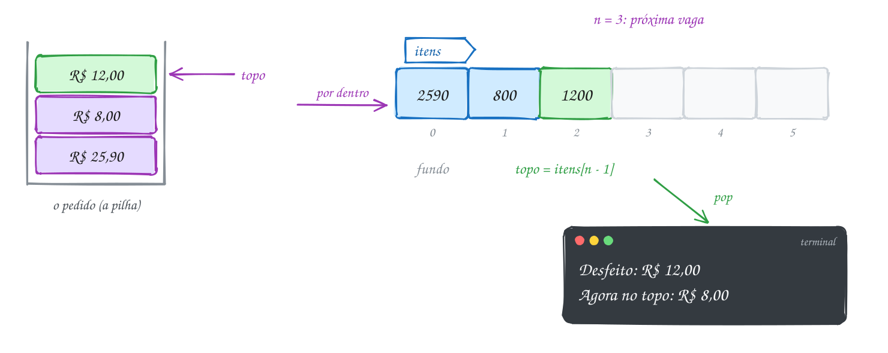
Trecho do pilha.c:
struct pilha {
int itens[CAPACIDADE]; // CAPACIDADE = 100
int n; // quantos itens estão na pilha
};
bool pilha_empilha(Pilha *p, int valor) {
if (p->n == CAPACIDADE) {
return false; // cheia: estouro (overflow)
}
p->itens[p->n] = valor;
p->n++;
return true;
}
bool pilha_desempilha(Pilha *p, int *valor) {
if (p->n == 0) {
return false; // vazia: nada para tirar (underflow)
}
p->n--;
*valor = p->itens[p->n]; // o valor continua no vetor, mas saiu da pilha
return true;
}
O programa só usa as funções do pilha.h:
#include <stdio.h>
#include "pilha.h"
int main(void) {
Pilha *pedido = pilha_cria();
if (pedido == NULL) {
return 1;
}
// preços em centavos: inteiro não tem erro de arredondamento
pilha_empilha(pedido, 2590); // pizza: R$ 25,90
pilha_empilha(pedido, 800); // refrigerante: R$ 8,00
pilha_empilha(pedido, 1200); // pudim: R$ 12,00
int preco;
if (pilha_desempilha(pedido, &preco)) { // "desfazer": sai o último que entrou
printf("Desfeito: R$ %d,%02d\n", preco / 100, preco % 100);
}
if (pilha_topo(pedido, &preco)) { // só olha, não tira
printf("Agora no topo: R$ %d,%02d\n", preco / 100, preco % 100);
}
printf("Itens no pedido: %d\n", pilha_tamanho(pedido));
pilha_libera(pedido);
return 0;
}
// Saída:
// Desfeito: R$ 12,00
// Agora no topo: R$ 8,00
// Itens no pedido: 2
O desfazer testa se a pilha está vazia antes de diminuir n:
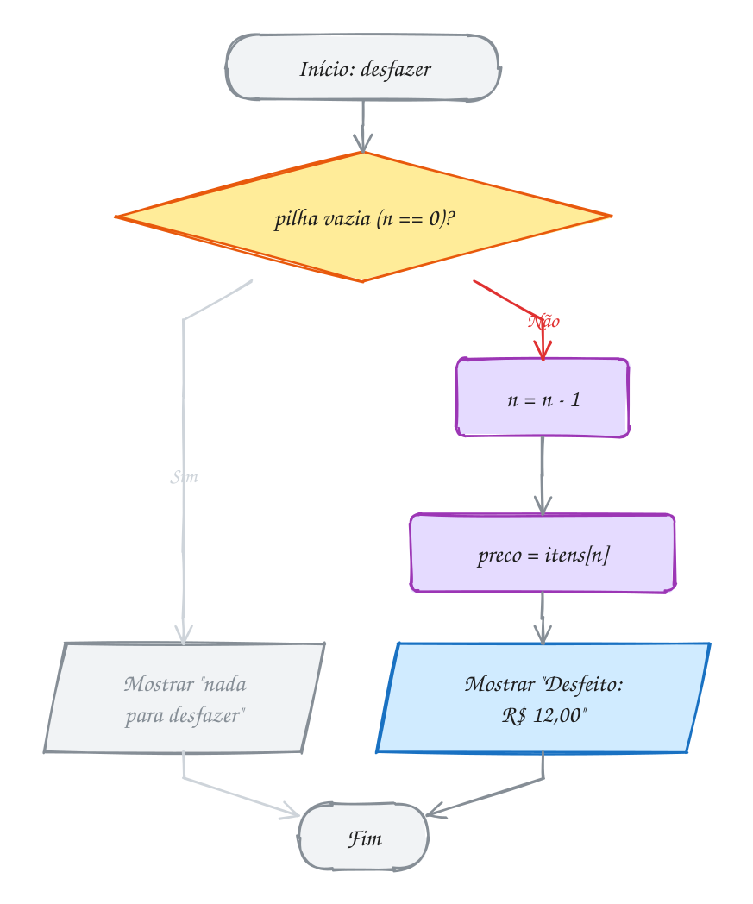
Exemplo A163 · As bordas da pilha: cheia e vazia
#include <stdio.h>
#include "0082-pilha.h"
int main(void) {
Pilha *cadeiras = pilha_cria(); // o depósito do salão empilha até 100
if (cadeiras == NULL) {
return 1;
}
// chegam 103 cadeiras numeradas: as 3 últimas não cabem (overflow)
int recusadas = 0;
for (int c = 1; c <= 103; c++) {
if (!pilha_empilha(cadeiras, c)) {
recusadas++;
}
}
int topo = 0;
pilha_topo(cadeiras, &topo);
printf("Empilhadas: %d, recusadas: %d, no topo: %d\n", pilha_tamanho(cadeiras), recusadas, topo);
// a festa usa todas: esvazia a pilha
int cadeira = 0;
int retiradas = 0;
while (pilha_desempilha(cadeiras, &cadeira)) {
retiradas++;
}
printf("Retiradas: %d, a última foi a %d\n", retiradas, cadeira);
// mais uma retirada com a pilha vazia (underflow): devolve false e
// não mexe na variável. O -1 serve de marcador para provar isso.
cadeira = -1;
if (!pilha_desempilha(cadeiras, &cadeira)) {
printf("Pilha vazia: nada saiu, cadeira continua %d\n", cadeira);
}
if (!pilha_topo(cadeiras, &topo)) {
printf("Topo também falha: vazia? %d\n", pilha_vazia(cadeiras));
}
pilha_libera(cadeiras);
return 0;
}
// Saída:
// Empilhadas: 100, recusadas: 3, no topo: 100
// Retiradas: 100, a última foi a 1
// Pilha vazia: nada saiu, cadeira continua -1
// Topo também falha: vazia? 1
gcc ~/LPEDC/material/A163.c ~/LPEDC/material/0082-pilha.c -o ~/LPEDC/material/A163 && ~/LPEDC/material/A163
Exemplo A164 · Decimal para binário: a pilha inverte a ordem
#include <stdio.h>
#include "0082-pilha.h"
int main(void) {
Pilha *restos = pilha_cria();
if (restos == NULL) {
return 1;
}
int n = 13;
printf("%d em binário: ", n);
// os restos da divisão por 2 saem do bit menos significativo para o mais
// significativo: 1, 0, 1, 1. A pilha devolve na ordem certa: 1, 1, 0, 1.
while (n > 0) {
pilha_empilha(restos, n % 2);
n = n / 2;
}
int bit;
while (pilha_desempilha(restos, &bit)) { // false quando a pilha esvazia
printf("%d", bit);
}
printf("\n");
pilha_libera(restos);
return 0;
}
// Saída:
// 13 em binário: 1101
gcc ~/LPEDC/material/A164.c ~/LPEDC/material/0082-pilha.c -o ~/LPEDC/material/A164 && ~/LPEDC/material/A164
Exercício E487 · ★☆☆
O garçom empilha as comandas no espeto do balcão, e a cozinha sempre pega a de cima. Com o pilha.h, empilhe 4 e 7; desempilhe e mostre o valor; empilhe 2 e 9; mostre o topo sem tirar; desempilhe duas vezes e mostre o último valor tirado e o tamanho da pilha; esvazie a pilha mostrando um valor por linha e mostre "vazia? " com o resultado de pilha_vazia (1 ou 0). Por fim, chame pilha_desempilha mais uma vez, guarde o retorno num bool e mostre o que a função devolveu e quanto x ficou valendo.
Saída esperada:
7
9
2 1
4
vazia? 1
mais um desempilha: devolveu 0, x = 4
gcc ~/LPEDC/material/E487.c ~/LPEDC/material/0082-pilha.c -o ~/LPEDC/material/E487 && ~/LPEDC/material/E487
Exercício E489 · ★★☆
Escreva int soma_pedido(Pilha *p), que devolve a soma de todos os preços (em centavos) de uma pilha do pilha.h, usando só as funções da interface. A pilha tem que voltar exatamente como estava, na mesma ordem: o cliente ainda pode querer desfazer. No main, empilhe 2590, 800 e 1200 (nessa ordem), mostre o total em reais e, depois, o topo e o tamanho da pilha.
Saída esperada:
Total: R$ 45,90
Topo continua: R$ 12,00 (3 itens)
gcc ~/LPEDC/material/E489.c ~/LPEDC/material/0082-pilha.c -o ~/LPEDC/material/E489 && ~/LPEDC/material/E489
Exercício E490 · ★★☆
No balcão do restaurante cabem 4 bandejas empilhadas. Escreva a própria pilha: typedef struct Balcao (vetor itens de CAPACIDADE ints e o índice topo, que vale -1 quando a pilha está vazia) e bool balcao_empilha(Balcao *b, int bandeja), que recusa (devolve false) a bandeja quando o balcão está cheio. No main, tente empilhar as bandejas 1 a 5 mostrando o resultado de cada uma e, no fim, a bandeja que está no topo.
Saída esperada:
Empilhou a bandeja 1
Empilhou a bandeja 2
Empilhou a bandeja 3
Empilhou a bandeja 4
Balcão cheio: a bandeja 5 ficou de fora
No topo: bandeja 4
gcc ~/LPEDC/material/E490.c ~/LPEDC/material/0082-pilha.c -o ~/LPEDC/material/E490 && ~/LPEDC/material/E490
Exercício E492 · ★★★
A bancada da cozinha tem 6 lugares e guarda duas pilhas de pratos: os limpos crescem a partir da posição 0 e os sujos a partir da posição 5, um em direção ao outro. A bancada só enche quando os 6 lugares estão ocupados. Sem usar o pilha.h, escreva a struct Bancada (vetor de 6 int e dois índices) e as funções bool empilha_limpo, empilha_sujo, desempilha_limpo e desempilha_sujo. No main: empilhe os limpos 1, 2 e 3 e os sujos 10, 20 e 30; tente empilhar o limpo 4 (tem que falhar); desempilhe um sujo; empilhe o limpo 4 de novo; e esvazie as duas pilhas mostrando o que sai.
Saída esperada:
Limpo 4: bancada cheia
Saiu o sujo 30
Limpo 4: ok
Limpos: 4 3 2 1
Sujos: 20 10
gcc ~/LPEDC/material/E492.c ~/LPEDC/material/0082-pilha.c -o ~/LPEDC/material/E492 && ~/LPEDC/material/E492
A pilha do 0082 mora num vetor de 100 posições. Isso basta para um pedido de delivery, mas não para o Ctrl+Z de uma planilha: ninguém sabe quantas edições a pessoa vai fazer antes de desfazer. Com teto fixo, a edição 101 dá overflow e o histórico se perde. O que falta é uma pilha que cresça enquanto houver memória.
A saída é a lista encadeada do módulo 11. Em vez de gavetas lado a lado, cada
item fica num nó, um bloco alocado com malloc que guarda o valor e o
endereço do nó seguinte. A pilha encadeada é uma pilha montada sobre essa
lista: ela só "enche" quando o malloc não consegue mais memória e devolve
NULL (CELES; RANGEL, 2002). Pense numa corrente de clipes: você engata um
clipe novo na ponta e a corrente cresce um elo, sem precisar reservar espaço
antes.
A primeira escolha é em que ponta da lista fica o topo. Fica no começo.
Inserir ou remover o primeiro nó custa O(1), porque só o ponteiro de entrada
muda. Remover o último exigiria achar o penúltimo para que ele passasse a
apontar para NULL, e numa lista simples isso obriga a percorrer todos os
nós, O(n) (FEOFILOFF, 2009). Como a pilha só mexe numa ponta, você escolhe a
ponta barata.
Empilhar, então, é inserir no início. O nó novo recebe o valor, passa a apontar para o antigo topo, e o topo passa a ser o nó novo (DEITEL; DEITEL, 2011, cap. 12). A ordem dessas duas atribuições é tudo: primeiro o nó novo segura o resto da pilha, depois a pilha passa a começar nele.
novo->prox = p->topo; // 1º: o novo segura o resto da pilha
p->topo = novo; // 2º: a pilha passa a começar no novo
Desempilhar é remover do início. Você guarda o endereço do nó do topo,
copia o valor dele, avança o topo para o nó de baixo e só então libera o nó
velho com free. A pilha está vazia quando topo == NULL, e esse é o
teste de underflow desta versão (DEITEL; DEITEL, 2011, cap. 12).
O melhor da troca é que quem usa a pilha não percebe nada. O pilha.h é
idêntico ao do 0082; só o pilha.c muda. O programa do delivery compila e
roda sem alterar uma linha, porque ele conhece as operações e não os campos
(CELES; RANGEL, 2002). É para isso que serve o tipo opaco do TAD: trocar a
implementação sem mexer em quem usa.
Não ter teto tem preço em espaço. Num sistema de 64 bits, cada nó ocupa 16
bytes: 4 do int, 4 de preenchimento para alinhar o ponteiro e 8 do próprio
ponteiro, como você viu no 0076. No vetor, o mesmo item ocupa 4 bytes. A
pilha encadeada gasta quatro vezes mais memória por item e, em troca, nunca
recusa um push enquanto houver memória livre.
[!WARNING] Trocar a ordem destrói a pilha: com
p->topo = novoantes denovo->prox = p->topo, o nó aponta para ele mesmo e os de baixo vazam. No desempilhar, lervelho->valordepois dofreeéheap-use-after-free.
Na planilha, a célula B2 foi de R$ 1500 para 1800, 2100 e 2500. Antes de cada edição, o valor antigo vai para a pilha; o 2100 fica no primeiro nó e o primeiro Ctrl+Z o devolve:
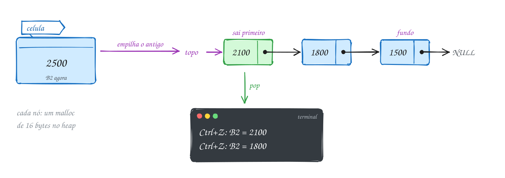
A struct agora guarda um ponteiro:
typedef struct no {
int valor;
struct no *prox; // o nó de baixo
} No;
struct pilha {
No *topo; // NULL quando a pilha está vazia
int n; // quantos itens (para pilha_tamanho não percorrer a lista)
};
bool pilha_empilha(Pilha *p, int valor) {
No *novo = malloc(sizeof *novo);
if (novo == NULL) {
return false; // só "enche" quando acaba a memória
}
novo->valor = valor;
novo->prox = p->topo; // o novo aponta para o antigo topo
p->topo = novo; // e passa a ser o topo
p->n++;
return true;
}
bool pilha_desempilha(Pilha *p, int *valor) {
if (p->topo == NULL) {
return false;
}
No *velho = p->topo;
*valor = velho->valor; // lê ANTES de liberar
p->topo = velho->prox;
free(velho);
p->n--;
return true;
}
O programa da planilha:
#include <stdio.h>
#include "pilha.h"
int main(void) {
Pilha *desfazer = pilha_cria();
if (desfazer == NULL) {
return 1;
}
int celula = 1500; // B2: orçamento do mês, em R$
int novos[] = {1800, 2100, 2500};
for (int i = 0; i < 3; i++) {
pilha_empilha(desfazer, celula); // guarda o valor antigo antes de mudar
celula = novos[i];
printf("B2 = %d\n", celula);
}
// a pilha agora é: topo -> 2100 -> 1800 -> 1500 -> NULL
for (int i = 0; i < 2; i++) { // Ctrl+Z duas vezes
if (pilha_desempilha(desfazer, &celula)) {
printf("Ctrl+Z: B2 = %d\n", celula);
}
}
printf("Ainda dá para desfazer %d vez(es)\n", pilha_tamanho(desfazer));
pilha_libera(desfazer); // libera o nó que sobrou e a própria pilha
return 0;
}
// Saída:
// B2 = 1800
// B2 = 2100
// B2 = 2500
// Ctrl+Z: B2 = 2100
// Ctrl+Z: B2 = 1800
// Ainda dá para desfazer 1 vez(es)
Ao empilhar o 2100, o novo nó aponta primeiro para o topo antigo; só depois o topo muda:
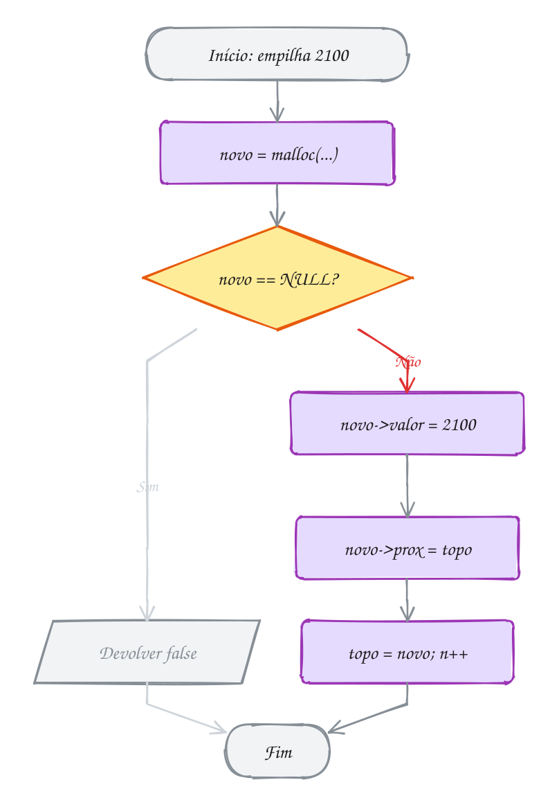
Exemplo A165 · Desfazer e refazer com duas pilhas
#include <stdio.h>
#include "0083-pilha.h"
// esvazia uma pilha: uma edição nova apaga o que dava para refazer
void esvazia(Pilha *p) {
int lixo;
while (pilha_desempilha(p, &lixo)) {
}
}
int main(void) {
Pilha *desfazer = pilha_cria();
if (desfazer == NULL) {
return 1;
}
Pilha *refazer = pilha_cria();
if (refazer == NULL) {
pilha_libera(desfazer);
return 1;
}
int temp = 22; // ar-condicionado da sala, em graus
int ajustes[] = {20, 18, 24};
for (int i = 0; i < 3; i++) {
pilha_empilha(desfazer, temp); // guarda o valor antigo
esvazia(refazer);
temp = ajustes[i];
}
printf("Ajustado para %d\n", temp); // desfazer: topo -> 18 -> 20 -> 22
for (int i = 0; i < 2; i++) { // Ctrl+Z duas vezes
pilha_empilha(refazer, temp); // o atual vai para o refazer
pilha_desempilha(desfazer, &temp);
printf("Desfez: %d\n", temp);
}
pilha_empilha(desfazer, temp); // Ctrl+Y: o caminho inverso
pilha_desempilha(refazer, &temp);
printf("Refez: %d\n", temp);
printf("Dá para refazer mais %d vez(es)\n", pilha_tamanho(refazer));
pilha_empilha(desfazer, temp); // edição nova: o refazer perde o sentido
esvazia(refazer);
temp = 21;
printf("Ajustado para %d; refazer agora tem %d\n", temp, pilha_tamanho(refazer));
printf("Desfazer guarda %d valores\n", pilha_tamanho(desfazer));
pilha_libera(desfazer);
pilha_libera(refazer);
return 0;
}
// Saída:
// Ajustado para 24
// Desfez: 18
// Desfez: 20
// Refez: 18
// Dá para refazer mais 1 vez(es)
// Ajustado para 21; refazer agora tem 0
// Desfazer guarda 3 valores
gcc ~/LPEDC/material/A165.c ~/LPEDC/material/0083-pilha.c -o ~/LPEDC/material/A165 && ~/LPEDC/material/A165
Exemplo A166 · Sem teto: 100 mil itens na pilha encadeada
#include <stdio.h>
#include "0083-pilha.h"
// A pilha do vetor (0082) recusaria o 101º item. Esta só para quando acabar a
// memória. O código é o mesmo do cliente da 0082: só o pilha.c mudou.
int main(void) {
Pilha *p = pilha_cria();
if (p == NULL) {
return 1;
}
int recusados = 0;
for (int i = 1; i <= 100000; i++) {
if (!pilha_empilha(p, i)) {
recusados++;
}
}
printf("Empilhados: %d, recusados: %d\n", pilha_tamanho(p), recusados);
int topo;
if (pilha_topo(p, &topo)) {
printf("No topo: %d\n", topo);
}
// pilha_libera percorre os 100 mil nós; sem ela, o AddressSanitizer
// acusaria 100 mil vazamentos de 16 bytes
pilha_libera(p);
return 0;
}
// Saída:
// Empilhados: 100000, recusados: 0
// No topo: 100000
gcc ~/LPEDC/material/A166.c ~/LPEDC/material/0083-pilha.c -o ~/LPEDC/material/A166 && ~/LPEDC/material/A166
Exercício E493 · ★☆☆
Escreva void estado(const Pilha *p), que mostra a pilha do pilha.h só com a interface: "[N itens, topo X]" (com "item" no singular quando N é 1) ou "[vazia]". No main, empilhe 3 e mostre o estado; empilhe 8 e mostre; desempilhe e mostre "saiu X -> " seguido do estado; empilhe 5 e mostre; empilhe 9 e mostre; e então esvazie a pilha num laço, mostrando "saiu X -> " e o estado a cada passo.
Saída esperada:
[1 item, topo 3]
[2 itens, topo 8]
saiu 8 -> [1 item, topo 3]
[2 itens, topo 5]
[3 itens, topo 9]
saiu 9 -> [2 itens, topo 5]
saiu 5 -> [1 item, topo 3]
saiu 3 -> [vazia]
gcc ~/LPEDC/material/E493.c ~/LPEDC/material/0083-pilha.c -o ~/LPEDC/material/E493 && ~/LPEDC/material/E493
Exercício E495 · ★★☆
O botão Voltar do navegador é uma pilha de páginas. Com os tipos abaixo (pilha encadeada com um texto em cada nó), escreva bool visita(Historico *h, const char *url), que põe a página no topo, e bool voltar(Historico *h), que tira a página do topo, mas só se ela não for a única (da primeira página não se volta). No main, visite g1.globo.com, ge.globo.com e receitas.com, mostre a página atual, tente voltar, visite cifraclub.com.br, mostre a página atual, tente voltar três vezes e libere a memória.
Saída esperada:
Agora em: receitas.com
Voltar -> ge.globo.com
Agora em: cifraclub.com.br
Voltar -> ge.globo.com
Voltar -> g1.globo.com
Não dá para voltar de g1.globo.com
gcc ~/LPEDC/material/E495.c ~/LPEDC/material/0083-pilha.c -o ~/LPEDC/material/E495 && ~/LPEDC/material/E495
Exercício E496 · ★★☆
Pilha de pratos do restaurante, cada prato com um número, feita com nós alocados. Com os tipos abaixo, escreva bool poe_prato(Prato **topo, int numero) e bool tira_prato(Prato **topo, int *numero), que devolve o número e libera o nó. No main, ponha os pratos 10, 20 e 30 (nessa ordem) e tire todos mostrando cada um.
Saída esperada:
Tirou o prato 30
Tirou o prato 20
Tirou o prato 10
gcc ~/LPEDC/material/E496.c ~/LPEDC/material/0083-pilha.c -o ~/LPEDC/material/E496 && ~/LPEDC/material/E496
Exercício E497 · ★★★
Os pedidos da cozinha chegaram empilhados fora de ordem: 5, 3, 8, 1 e 4 (o 4 no topo). Escreva void ordena(Pilha *p), que deixa a pilha ordenada com o MENOR no topo, usando só as funções do pilha.h e no máximo UMA pilha auxiliar (nada de vetor). No main, empilhe os pedidos nessa ordem, chame ordena e desempilhe tudo mostrando os valores numa linha, separados por espaço.
Saída esperada:
1 3 4 5 8
gcc ~/LPEDC/material/E497.c ~/LPEDC/material/0083-pilha.c -o ~/LPEDC/material/E497 && ~/LPEDC/material/E497
Você esquece de fechar um colchete no editor de código e ele sublinha o lugar
exato do erro. Para isso, o editor precisa saber, a cada ), ] ou }, qual
abertura ele está fechando. A pilha resolve esse problema e mais um, que
aparece em toda calculadora: fazer contas sem depender de parênteses. São as
duas aplicações clássicas da pilha.
Comece pelo jeito ingênuo. Com um só tipo de parêntese, um contador basta:
soma 1 em cada (, tira 1 em cada ) e, no fim, o contador tem de valer
zero sem nunca ter ficado negativo. Com três tipos ((), [] e {}), o
contador falha. Em ( [ ) ] as contas fecham, mas o ) chegou quando quem
esperava fechamento era o [ (TENENBAUM; LANGSAM; AUGENSTEIN, 1995, cap. 2).
Falta lembrar a ordem das aberturas, e não só quantas são.
A regra que resolve é esta: todo fechamento casa com a abertura mais recente que ainda está pendente. "A mais recente pendente" é exatamente o topo de uma pilha, porque a última abertura empilhada é a primeira que pede fechamento (FEOFILOFF, 2009). Pense em caixas dentro de caixas: você só fecha a caixa de fora depois de fechar a de dentro.
O algoritmo percorre a string uma vez. Se o caractere abre ((, [ ou {),
você empilha. Se fecha, você desempilha e confere se o par combina; se
a pilha estava vazia ou o par não combina, a expressão tem erro. Qualquer
outro caractere é ignorado. Quando a string acaba, a pilha tem de estar
vazia: se sobrou abertura, faltou fechar alguma coisa (FEOFILOFF, 2009).
Em { x = v[(i + 1)] }, os três primeiros delimitadores entram na pilha; o
) encontra ( no topo, o ] encontra [ e o } encontra {.
A segunda aplicação é a conta. O jeito de escrever que você aprendeu na
escola é a notação infixa: o operador fica no meio dos operandos, como em
(35 + 25) * 3 / 4. Ela precisa de parênteses e de regras de precedência
para dizer o que vem primeiro. Na notação pós-fixa, também chamada de
polonesa reversa, o operador vem depois dos dois operandos: a mesma conta
fica 35 25 + 3 * 4 / (TENENBAUM; LANGSAM; AUGENSTEIN, 1995, cap. 2). A
calculadora HP 12C funciona assim. A ordem da escrita já é a ordem das
contas, e nenhum parêntese é necessário.
Avaliar a pós-fixa exige uma pilha de números. Leu um número, empilha. Leu um operador, desempilha dois números, faz a conta e empilha o resultado. No fim sobra um só número na pilha, e ele é o resultado (KERNIGHAN; RITCHIE, 1988, seç. 4.3). Se faltar operando para um operador, ou se sobrar mais de um número no fim, a expressão está mal escrita. A tabela mostra a conta do bar de R$ 60 com 3 rodadas, dividida por 4 amigos:
| lê | faz | pilha (topo à direita) |
|---|---|---|
35 |
empilha | 35 |
25 |
empilha | 35 25 |
+ |
tira 25 e 35, empilha 35 + 25 | 60 |
3 |
empilha | 60 3 |
* |
tira 3 e 60, empilha 60 * 3 | 180 |
4 |
empilha | 180 4 |
/ |
tira 4 e 180, empilha 180 / 4 | 45 |
As duas aplicações custam o mesmo. Cada caractere é lido uma vez, então o
tempo é O(n) para uma string de n caracteres. A pilha nunca passa de n itens
(o pior caso é ((((((), então a memória também é O(n) (FEOFILOFF, 2009).
[!WARNING] Na pós-fixa, o primeiro a sair é o operando da direita. Em
8 3 -, sai o 3 (b) e depois o 8 (a): a conta éa - b = 5. Teste com-e/, onde a inversão aparece. Nos parênteses, esquecer o teste final de pilha vazia faz{ [ (passar como balanceada.
Em { x = v[(i + 1)] } sobram os delimitadores { [ ( ) ] }. Os três
primeiros são empilhados; o ) encontra ( no topo e casa, depois ] casa
com [ e } com {:
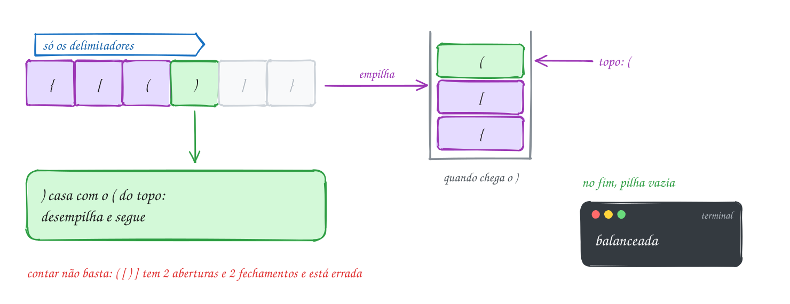
O verificador testa quatro expressões, com o pilha.h e o pilha.c do 0083:
#include <stdbool.h>
#include <stdio.h>
#include "pilha.h"
// a abertura que combina com cada fechamento
char abertura_de(char fecha) {
if (fecha == ')') {
return '(';
}
if (fecha == ']') {
return '[';
}
return '{';
}
bool balanceada(const char *s) {
Pilha *p = pilha_cria();
if (p == NULL) {
return false;
}
bool ok = true;
for (int i = 0; s[i] != '\0' && ok; i++) {
char c = s[i];
if (c == '(' || c == '[' || c == '{') {
pilha_empilha(p, c); // abriu: espera o fechamento lá na frente
} else if (c == ')' || c == ']' || c == '}') {
int topo;
// fechou: tem que existir uma abertura e ela tem que ser do mesmo tipo
if (!pilha_desempilha(p, &topo) || topo != abertura_de(c)) {
ok = false;
}
}
}
if (!pilha_vazia(p)) {
ok = false; // sobrou abertura sem fechamento
}
pilha_libera(p);
return ok;
}
int main(void) {
const char *testes[] = {"{ x = v[(i + 1)] }", "( [ ) ]", "(a + b))", "{ [ ("};
for (int i = 0; i < 4; i++) {
printf("%-20s %s\n", testes[i], balanceada(testes[i]) ? "balanceada" : "com erro");
}
return 0;
}
// Saída:
// { x = v[(i + 1)] } balanceada
// ( [ ) ] com erro
// (a + b)) com erro
// { [ ( com erro
O laço tem duas saídas antecipadas para o erro; "pilha vazia?" só é testada no fim da string:
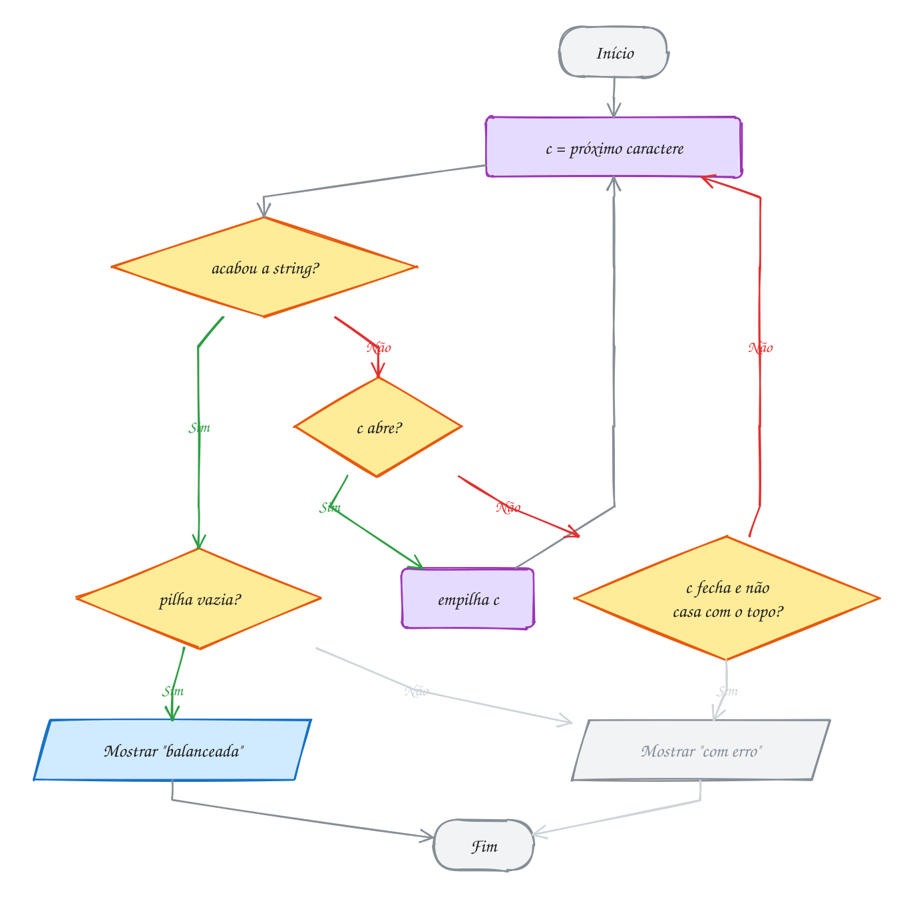
A conta do bar, (35 + 25) * 3 / 4, dividida por 4 amigos, vira
35 25 + 3 * 4 /:
| lê | faz | pilha (topo à direita) |
|---|---|---|
35 |
empilha | 35 |
25 |
empilha | 35 25 |
+ |
tira 25 e 35, empilha 35 + 25 | 60 |
3 |
empilha | 60 3 |
* |
tira 3 e 60, empilha 60 * 3 | 180 |
4 |
empilha | 180 4 |
/ |
tira 4 e 180, empilha 180 / 4 | 45 |
Cada um paga R$ 45. O A168 faz essa tabela em C.
Exemplo A167 · Parênteses dentro de aspas não contam
#include <stdbool.h>
#include <stdio.h>
#include "0084-pilha.h"
char abertura_de(char fecha) {
return fecha == ')' ? '(' : fecha == ']' ? '[' : '{';
}
// Confere uma linha de código C. Com pula_aspas, o que está entre "..." ou
// '...' é texto, não código: um ')' dentro de aspas não fecha nada.
bool balanceada(const char *s, bool pula_aspas) {
Pilha *p = pilha_cria();
if (p == NULL) {
return false;
}
bool ok = true;
char aspa = '\0'; // '\0' = fora de aspas; senão, a aspa que abriu
for (int i = 0; s[i] != '\0' && ok; i++) {
char c = s[i];
if (aspa != '\0') {
if (c == '\\' && s[i + 1] != '\0') {
i++; // \" ou \' não fecham a aspa: pula o caractere seguinte
} else if (c == aspa) {
aspa = '\0'; // fechou o texto
}
} else if (pula_aspas && (c == '"' || c == '\'')) {
aspa = c; // começou um texto
} else if (c == '(' || c == '[' || c == '{') {
pilha_empilha(p, c);
} else if (c == ')' || c == ']' || c == '}') {
int topo;
if (!pilha_desempilha(p, &topo) || topo != abertura_de(c)) {
ok = false;
}
}
}
if (!pilha_vazia(p) || aspa != '\0') {
ok = false; // sobrou abertura, ou uma aspa ficou aberta
}
pilha_libera(p);
return ok;
}
int main(void) {
const char *linhas[] = {
"if (c == ')') { n++; }",
"printf(\"[%d]\\n\", v[i]);",
"puts(\"sorriso :)\");",
"v[(i + 1] = 0;",
};
printf("%-28s %-10s %s\n", "linha", "simples", "pulando aspas");
for (int i = 0; i < 4; i++) {
printf("%-28s %-10s %s\n", linhas[i],
balanceada(linhas[i], false) ? "ok" : "erro",
balanceada(linhas[i], true) ? "ok" : "erro");
}
return 0;
}
// Saída:
// linha simples pulando aspas
// if (c == ')') { n++; } erro ok
// printf("[%d]\n", v[i]); ok ok
// puts("sorriso :)"); erro ok
// v[(i + 1] = 0; erro erro
gcc ~/LPEDC/material/A167.c ~/LPEDC/material/0084-pilha.c -o ~/LPEDC/material/A167 && ~/LPEDC/material/A167
Exemplo A168 · A conta do bar em notação pós-fixa
#include <stdbool.h>
#include <stdio.h>
#include "0084-pilha.h"
// Avalia uma expressão pós-fixa com inteiros não negativos separados por
// espaço e os operadores + - * /. Devolve false se a expressão for inválida.
bool avalia(const char *expr, int *resultado) {
Pilha *p = pilha_cria();
if (p == NULL) {
return false;
}
bool ok = true;
for (int i = 0; expr[i] != '\0' && ok; i++) {
char c = expr[i];
if (c >= '0' && c <= '9') {
int numero = 0;
while (expr[i] >= '0' && expr[i] <= '9') { // junta os dígitos: "35" -> 35
numero = numero * 10 + (expr[i] - '0');
i++;
}
i--; // o for vai somar 1 de novo
pilha_empilha(p, numero);
} else if (c == '+' || c == '-' || c == '*' || c == '/') {
int a, b;
// o primeiro a sair é o operando da DIREITA
if (!pilha_desempilha(p, &b) || !pilha_desempilha(p, &a) || (c == '/' && b == 0)) {
ok = false;
} else if (c == '+') {
pilha_empilha(p, a + b);
} else if (c == '-') {
pilha_empilha(p, a - b);
} else if (c == '*') {
pilha_empilha(p, a * b);
} else {
pilha_empilha(p, a / b);
}
}
}
// no fim tem que sobrar exatamente um número: o resultado
if (ok && (!pilha_desempilha(p, resultado) || !pilha_vazia(p))) {
ok = false;
}
pilha_libera(p);
return ok;
}
int main(void) {
// (35 + 25) * 3 / 4: três rodadas de petisco (R$ 35) e bebida (R$ 25),
// divididas entre 4 amigos
const char *expr = "35 25 + 3 * 4 /";
int total;
if (avalia(expr, &total)) {
printf("%s = %d\n", expr, total);
}
if (!avalia("35 +", &total)) {
printf("35 + : expressão inválida\n");
}
return 0;
}
// Saída:
// 35 25 + 3 * 4 / = 45
// 35 + : expressão inválida
gcc ~/LPEDC/material/A168.c ~/LPEDC/material/0084-pilha.c -o ~/LPEDC/material/A168 && ~/LPEDC/material/A168
Exercício E499 · ★☆☆
Escreva bool avalia(const char *expr, int *resultado), que calcula uma expressão pós-fixa (inteiros não negativos e + - * /, separados por espaço) com uma pilha do pilha.h; devolve false se a expressão for inválida (faltam operandos, sobram valores ou divide por zero). Traduza à mão para pós-fixa a) (7 + 3) * 2, b) 7 + 3 * 2, c) 100 / (2 + 3) - 4 e d) (6 / 2) * (3 - 1). No main, avalie cada uma e mostre o resultado ao lado do valor da mesma conta escrita direto em C, com "confere" ou "NÃO confere".
Saída esperada:
7 3 + 2 * = 20 (em C: 20) confere
7 3 2 * + = 13 (em C: 13) confere
100 2 3 + / 4 - = 16 (em C: 16) confere
6 2 / 3 1 - * = 6 (em C: 6) confere
gcc ~/LPEDC/material/E499.c ~/LPEDC/material/0084-pilha.c -o ~/LPEDC/material/E499 && ~/LPEDC/material/E499
Exercício E501 · ★★☆
Escreva void diagnostico(const char *s), que confere os parênteses (), [] e {} de s com uma pilha do pilha.h e diz onde está o problema. Empilhe a POSIÇÃO de cada abertura na string (o caractere é s[pos]); a primeira posição é 0. As mensagens possíveis estão na saída esperada: ok, fecha sem abrir, fechamento trocado (dizendo onde a abertura estava) e abertura sem fechar (dizendo quantas faltam e qual o de cima). No main, teste "[1, (2, 3)]", "{a: [1, 2}]", "f(x))" e "if (a[0] {".
Saída esperada:
[1, (2, 3)]: ok
{a: [1, 2}]: esperava ] e veio } na posição 9 (o [ abriu na posição 4)
f(x)): fecha sem abrir na posição 4
if (a[0] {: faltou fechar 2; o de cima é o { da posição 9
gcc ~/LPEDC/material/E501.c ~/LPEDC/material/0084-pilha.c -o ~/LPEDC/material/E501 && ~/LPEDC/material/E501
Exercício E502 · ★★☆
Escreva int avalia(const char *expr), uma calculadora pós-fixa com uma pilha do pilha.h: os operandos têm um dígito, os operadores são + - * / e há um espaço entre os símbolos. No main, calcule "2 3 +", "8 3 -", "8 4 /" e "9 5 2 - *", mostrando cada conta e o resultado.
Saída esperada:
2 3 + = 5
8 3 - = 5
8 4 / = 2
9 5 2 - * = 27
gcc ~/LPEDC/material/E502.c ~/LPEDC/material/0084-pilha.c -o ~/LPEDC/material/E502 && ~/LPEDC/material/E502
Exercício E503 · ★★★
Escreva void para_posfixa(const char *in, char *out), que converte uma expressão infixa (operandos de UM dígito, + - * / e parênteses) para a notação pós-fixa, com um espaço entre os símbolos, usando a pilha do pilha.h para os operadores (o algoritmo do "pátio de manobras", de Dijkstra). Operadores de mesma precedência associam à esquerda. No main, converta e mostre as quatro expressões da saída esperada.
Saída esperada:
1+2*3 -> 1 2 3 * +
(6+2)*5-8/4 -> 6 2 + 5 * 8 4 / -
(1+2)*(3-4) -> 1 2 + 3 4 - *
9-4-2 -> 9 4 - 2 -
gcc ~/LPEDC/material/E503.c ~/LPEDC/material/0084-pilha.c -o ~/LPEDC/material/E503 && ~/LPEDC/material/E503
A pilha atende o mais recente primeiro, e isso é justo para o "desfazer", mas seria um desastre na lotérica. Lá você pega a senha 35 e espera; quem chegou antes é atendido antes, e a senha 40, recém-saída da maquininha, espera todo mundo da frente. Para guardar dados nessa ordem, você precisa de outra estrutura: uma que entregue o item mais antigo.
Essa estrutura é a fila (queue). O item novo entra pelo fim e o próximo a sair está no início, como na fila do banco. O primeiro a entrar é o primeiro a sair: a sigla é FIFO, do inglês first in, first out, o contrário do LIFO da pilha (FEOFILOFF, 2009). No Cormen, inserir se chama ENQUEUE e retirar se chama DEQUEUE (CORMEN et al., 2024, cap. 10).
Como TAD, a fila tem a mesma cara da pilha do 0082: inserir no fim, retirar
do início, olhar quem é o próximo sem tirar e perguntar se está vazia (CELES;
RANGEL, 2002). O valor retirado sai por ponteiro, e o bool diz se a
operação deu certo:
typedef struct fila Fila; // tipo opaco: os campos ficam no fila.c
Fila *fila_cria(void); // fila vazia (NULL se faltar memória)
void fila_libera(Fila *f); // devolve toda a memória da fila
bool fila_vazia(const Fila *f); // true se não tem ninguém
int fila_tamanho(const Fila *f); // quantos estão na fila
bool fila_insere(Fila *f, int valor); // entra no fim: false se não coube
bool fila_retira(Fila *f, int *valor); // sai do início: false se vazia
bool fila_primeiro(const Fila *f, int *valor); // olha quem é o próximo, sem tirar
Guardar a fila num vetor parece simples e esconde um problema. A pilha mexe
numa ponta só; a fila mexe nas duas. Se o início fica sempre em itens[0],
cada retirada obriga a empurrar todos os itens uma casa para a frente, e isso
custa O(n). Se você não empurra e só avança o índice do início, a fila anda
para a direita e bate no fim do vetor com as primeiras gavetas vazias
(TENENBAUM; LANGSAM; AUGENSTEIN, 1995, cap. 4).
A saída é a fila circular: quando o índice passa da última gaveta, ele
volta à gaveta 0, como os ponteiros de um relógio voltam ao 12. Você guarda o
início (a gaveta do próximo a sair) e o número de itens n. A próxima
vaga é (inicio + n) % CAPACIDADE: o resto da divisão faz a volta sozinho
(CELES; RANGEL, 2002). Com 8 gavetas, depois da 7 vem (7 + 1) % 8 = 0.
Retirar lê itens[inicio] e avança o início da mesma forma, com
(inicio + 1) % CAPACIDADE.
Por que guardar n em vez de um índice de fim? Com só inicio e fim, a
fila vazia e a fila cheia ficam com a mesma cara: nas duas, inicio == fim.
Há duas saídas. A primeira é guardar n, como este curso faz. A segunda é
sacrificar uma gaveta e declarar a fila cheia quando
(fim + 1) % CAPACIDADE == inicio, de modo que cabem 7 itens em 8 gavetas.
O Cormen usa a segunda, com Q.head e Q.tail (a próxima vaga): num vetor
de n posições, a fila guarda no máximo n − 1 itens (CORMEN et al., 2024,
cap. 10).
Inserir e retirar custam O(1): uma conta de resto, uma atribuição e um
ajuste de contador. Como na pilha, retirar não apaga nada; o valor fica na
gaveta até alguém escrever por cima (FEOFILOFF, 2009). Um detalhe de
desempenho: com capacidade potência de 2, i % 8 dá o mesmo que i & 7, e o
compilador costuma fazer essa troca sozinho.
[!WARNING] O tamanho como
fim - iniciodá negativo depois da volta: com início 4 e fim 2, dá -2. Use o contadornou(fim - inicio + CAPACIDADE) % CAPACIDADE.
Na lotérica, o painel guarda 8 senhas. Chegam as senhas 31 a 36 (gavetas 0 a 5) e o caixa atende 4. Chegam 37 a 40: o 37 e o 38 ocupam as gavetas 6 e 7, e o 39 e o 40 dão a volta para as gavetas 0 e 1:
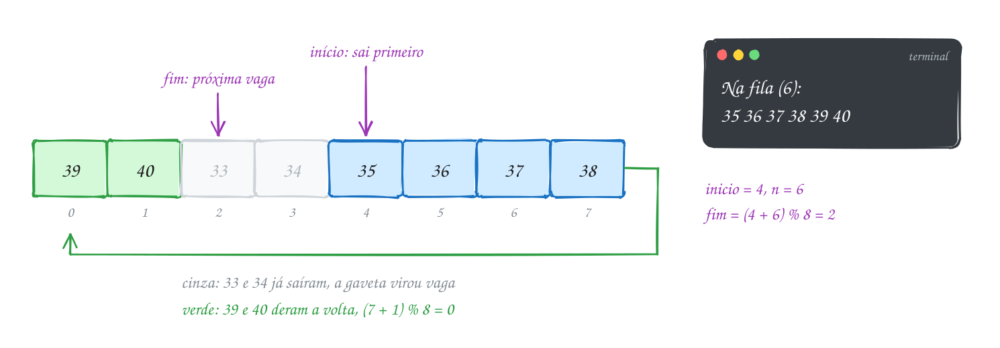
Parte principal do fila.c:
#define CAPACIDADE 8
struct fila {
int itens[CAPACIDADE];
int inicio; // posição do primeiro da fila (o próximo a sair)
int n; // quantos estão na fila: separa "cheia" de "vazia"
};
bool fila_insere(Fila *f, int valor) {
if (f->n == CAPACIDADE) {
return false; // cheia
}
int fim = (f->inicio + f->n) % CAPACIDADE; // dá a volta no fim do vetor
f->itens[fim] = valor;
f->n++;
return true;
}
bool fila_retira(Fila *f, int *valor) {
if (f->n == 0) {
return false; // vazia
}
*valor = f->itens[f->inicio];
f->inicio = (f->inicio + 1) % CAPACIDADE;
f->n--;
return true;
}
O programa só vê as funções do fila.h:
#include <stdio.h>
#include "fila.h"
int main(void) {
Fila *senhas = fila_cria(); // o painel guarda até 8 senhas
if (senhas == NULL) {
return 1;
}
for (int s = 31; s <= 36; s++) { // chegam 6 pessoas
fila_insere(senhas, s);
}
printf("Atendidas:");
for (int i = 0; i < 4; i++) { // o caixa chama 4
int s;
if (fila_retira(senhas, &s)) {
printf(" %d", s);
}
}
printf("\nChegaram:");
for (int s = 37; s <= 40; s++) { // 39 e 40 dão a volta no vetor
if (fila_insere(senhas, s)) {
printf(" %d", s);
}
}
printf("\nNa fila (%d):", fila_tamanho(senhas));
int s;
while (fila_retira(senhas, &s)) {
printf(" %d", s);
}
printf("\n");
fila_libera(senhas);
return 0;
}
// Saída:
// Atendidas: 31 32 33 34
// Chegaram: 37 38 39 40
// Na fila (6): 35 36 37 38 39 40
A senha 39 entra com inicio = 4 e n = 4: o % a manda para a gaveta 0:
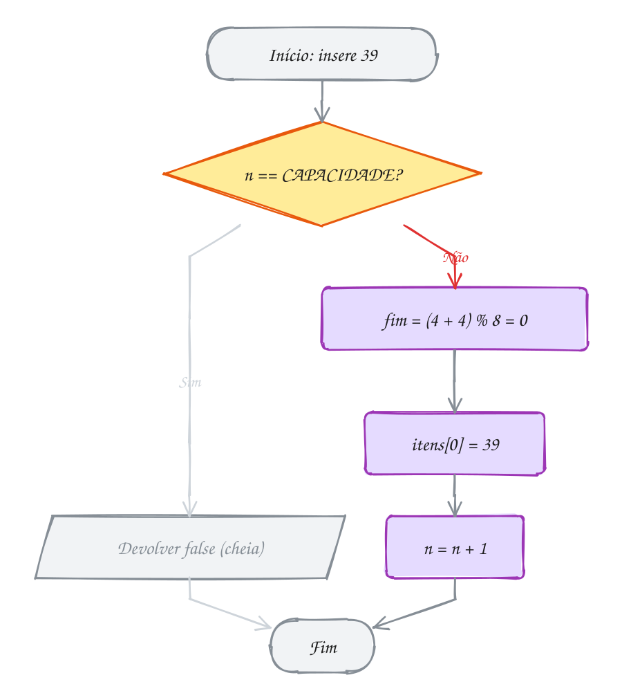
Exemplo A169 · Só as 8 últimas corridas: a mais antiga dá lugar
#include <stdio.h>
#include "0085-fila.h"
int main(void) {
Fila *historico = fila_cria(); // o app mostra as 8 corridas mais recentes
if (historico == NULL) {
return 1;
}
int corridas[] = {18, 25, 12, 40, 9, 31, 22, 15, 27, 33, 11}; // em R$
int total = sizeof corridas / sizeof corridas[0];
for (int i = 0; i < total; i++) {
// cheia? em vez de recusar a nova, descarta a mais antiga (o início)
if (!fila_insere(historico, corridas[i])) {
int velha;
fila_retira(historico, &velha);
fila_insere(historico, corridas[i]);
printf("Corrida de R$ %d saiu do histórico para entrar a de R$ %d\n", velha, corridas[i]);
}
}
// percorre sem perder ninguém: retira, mostra e devolve ao fim
int soma = 0;
printf("Histórico (%d):", fila_tamanho(historico));
for (int i = 0; i < fila_tamanho(historico); i++) {
int valor;
fila_retira(historico, &valor);
printf(" %d", valor);
soma += valor;
fila_insere(historico, valor);
}
printf("\nGasto nas últimas 8: R$ %d\n", soma);
fila_libera(historico);
return 0;
}
// Saída:
// Corrida de R$ 18 saiu do histórico para entrar a de R$ 27
// Corrida de R$ 25 saiu do histórico para entrar a de R$ 33
// Corrida de R$ 12 saiu do histórico para entrar a de R$ 11
// Histórico (8): 40 9 31 22 15 27 33 11
// Gasto nas últimas 8: R$ 188
gcc ~/LPEDC/material/A169.c ~/LPEDC/material/0085-fila.c -o ~/LPEDC/material/A169 && ~/LPEDC/material/A169
Exemplo A170 · Painel cheio: a fila circular reaproveita as vagas
#include <stdio.h>
#include "0085-fila.h"
int main(void) {
Fila *f = fila_cria();
if (f == NULL) {
return 1;
}
// 9 senhas para um painel de 8: a última é recusada
for (int s = 1; s <= 9; s++) {
if (!fila_insere(f, s)) {
printf("Senha %d recusada: painel cheio\n", s);
}
}
// 3 atendimentos liberam as posições 0, 1 e 2 do vetor...
int s;
for (int i = 0; i < 3; i++) {
fila_retira(f, &s);
}
// ...e as próximas senhas entram nelas, sem mover ninguém
for (s = 9; s <= 11; s++) {
if (fila_insere(f, s)) {
printf("Senha %d entrou\n", s);
}
}
fila_primeiro(f, &s);
printf("Próxima a ser chamada: %d (de %d na fila)\n", s, fila_tamanho(f));
fila_libera(f);
return 0;
}
// Saída:
// Senha 9 recusada: painel cheio
// Senha 9 entrou
// Senha 10 entrou
// Senha 11 entrou
// Próxima a ser chamada: 4 (de 8 na fila)
gcc ~/LPEDC/material/A170.c ~/LPEDC/material/0085-fila.c -o ~/LPEDC/material/A170 && ~/LPEDC/material/A170
Exercício E505 · ★☆☆
Uma fila circular de 4 gavetas, com os campos à vista: struct Fila4 com o vetor itens, o índice inicio e o contador n (todas as gavetas começam com -1). Escreva bool insere(Fila4 *f, int valor), bool retira(Fila4 *f, int *valor) e void mostra(const Fila4 *f), que imprime o vetor inteiro (_ nas gavetas que valem -1) e depois inicio e n. No main, insira 1 a 6 mostrando o estado depois de cada tentativa (com "recusado" quando não couber); logo depois do 2, retire um; no fim, retire mais dois e mostre a gaveta onde entraria o próximo.
Saída esperada:
insere 1: [1 _ _ _] inicio 0, n 1
insere 2: [1 2 _ _] inicio 0, n 2
retira 1: [1 2 _ _] inicio 1, n 1
insere 3: [1 2 3 _] inicio 1, n 2
insere 4: [1 2 3 4] inicio 1, n 3
insere 5: [5 2 3 4] inicio 1, n 4
insere 6: recusado [5 2 3 4] inicio 1, n 4
retira 2: [5 2 3 4] inicio 2, n 3
retira 3: [5 2 3 4] inicio 3, n 2
próxima vaga: gaveta 1
gcc ~/LPEDC/material/E505.c ~/LPEDC/material/0085-fila.c -o ~/LPEDC/material/E505 && ~/LPEDC/material/E505
Exercício E507 · ★★☆
Outra convenção de fila circular não guarda o contador: ela guarda inicio (o próximo a sair) e fim (a próxima vaga) e SACRIFICA uma gaveta, então com TAM 5 cabem só 4. Com o tipo abaixo, escreva fc_vazia, fc_cheia, fc_insere e fc_retira (bool). No main, insira 1 a 5 (avisando "N recusado: fila cheia" quando não couber), retire dois mostrando "saiu X", insira 6, 7 e 8 (mesmo aviso) e esvazie a fila mostrando o que sobrou.
Saída esperada:
5 recusado: fila cheia
saiu 1
saiu 2
8 recusado: fila cheia
Na fila: 3 4 6 7
gcc ~/LPEDC/material/E507.c ~/LPEDC/material/0085-fila.c -o ~/LPEDC/material/E507 && ~/LPEDC/material/E507
Exercício E508 · ★★☆
O drive-thru da lanchonete usa uma fila circular com inicio, fim (a próxima vaga) e uma gaveta sacrificada (TAM 6, cabem 5 carros). Com o tipo abaixo, escreva void entra(DriveThru *f, int placa) (ignora o carro se não couber), void sai(DriveThru *f) e int tamanho(const DriveThru *f), que tem que acertar mesmo depois que a fila deu a volta no vetor. No main, entre os carros 1 a 5 e mostre "Carros na fila: N"; saiam 4 e mostre; entrem 6, 7 e 8 e mostre.
Saída esperada:
Carros na fila: 5
Carros na fila: 1
Carros na fila: 4
gcc ~/LPEDC/material/E508.c ~/LPEDC/material/0085-fila.c -o ~/LPEDC/material/E508 && ~/LPEDC/material/E508
Exercício E509 · ★★★
Batata quente: 7 pessoas numeradas de 1 a 7 estão em roda. A batata passa de mão em mão, e quem estiver com ela na 3ª passada sai. A contagem recomeça de quem estava ao lado, até sobrar uma pessoa (o problema de Josephus). Resolva com uma fila do fila.h e mostre a ordem de saída e quem sobrou.
Saída esperada:
Saíram: 3 6 2 7 5 1
Sobrou: 4
gcc ~/LPEDC/material/E509.c ~/LPEDC/material/0085-fila.c -o ~/LPEDC/material/E509 && ~/LPEDC/material/E509
Sexta à noite, a cozinha da pizzaria recebe os pedidos do app numa fila. O
painel de 8 lugares do 0085 lotou às 20h, e o nono pedido foi recusado com
overflow. É o mesmo problema que a pilha teve no 0082, e a solução é a mesma:
trocar o vetor por nós alocados com malloc.
A fila encadeada é uma fila montada sobre uma lista encadeada: cada pedido fica num nó com o valor e o endereço do próximo, e a fila só recusa um item quando a memória acaba (CELES; RANGEL, 2002). A diferença para a pilha encadeada está nas pontas. A pilha mexe numa ponta só, e por isso um ponteiro bastava. A fila retira de uma ponta e insere na outra, então precisa de dois.
O primeiro ponteiro é o início, que aponta o próximo a sair. Retirar dele
é fácil: você avança com inicio = inicio->prox e libera o nó velho, em
O(1). O segundo é o fim, que aponta o último que entrou. Sem ele, inserir
exigiria andar a lista toda até achar o último nó, O(n). Com ele, basta
pendurar o nó novo atrás do último e mover o fim: fim->prox = novo; fim = novo, também O(1) (DEITEL; DEITEL, 2011, cap. 12). Na fila vazia, os dois
ponteiros valem NULL (FEOFILOFF, 2009).
A escolha das pontas não é arbitrária. A fila sai pelo início e entra pelo
fim, e o contrário não funcionaria bem. Numa lista simples, cada nó conhece
o seguinte, mas não o anterior. Remover o último obrigaria a achar o
penúltimo para fazê-lo apontar para NULL, e achar o penúltimo é percorrer a
lista (CELES; RANGEL, 2002). Já inserir depois do último e remover o primeiro
não pedem conhecer ninguém para trás.
Os cuidados ficam nas bordas, quando a fila passa de vazia para um item ou de
um item para vazia. Inserir na fila vazia precisa atualizar também o
inicio, porque o nó novo é ao mesmo tempo o primeiro e o último. Retirar o
último item precisa zerar também o fim, porque o nó para o qual ele
apontava acabou de ser liberado (CELES; RANGEL, 2002). Os dois casos são
testes de uma linha, e esquecer qualquer um deles quebra a fila.
Quem usa a fila de novo não percebe a troca. O fila.h é o mesmo do 0085, e
só o fila.c muda. O que muda é o custo de cada operação: a fila circular só
escreve numa gaveta, enquanto a encadeada chama malloc a cada inserção e
free a cada retirada, e essas chamadas são bem mais caras. Você troca
velocidade por não ter limite de tamanho.
[!WARNING] Retirar o último sem zerar o
fimdeixa ofimapontando para o nó liberado, e o próximofila_insereescrevefim->proxem memória liberada (heap-use-after-free). Inserir na fila vazia sem atualizar oiniciodeixa a fila "vazia" para sempre.
Na pizzaria, chegam os pedidos 501, 502 e 503. A cozinha pega o 501: o início anda para o 502 e o nó do 501 é liberado. Chega o 504, pendurado depois do 503, e o fim passa a apontar para ele:
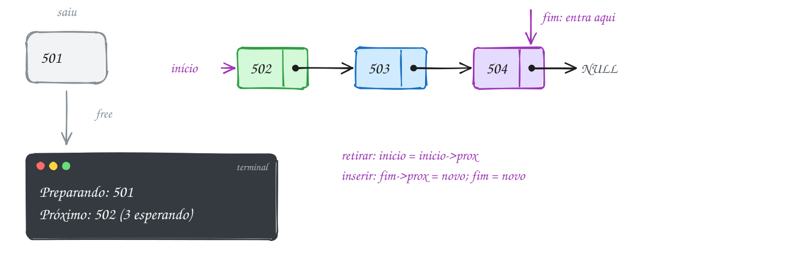
O fila.c guarda os dois ponteiros:
struct fila {
NoFila *inicio; // o próximo a sair; NULL se vazia
NoFila *fim; // o último que entrou; NULL se vazia
int n;
};
bool fila_insere(Fila *f, int valor) {
NoFila *novo = malloc(sizeof *novo);
if (novo == NULL) {
return false;
}
novo->valor = valor;
novo->prox = NULL; // vai ser o último
if (f->fim == NULL) {
f->inicio = novo; // fila vazia: o novo também é o primeiro
} else {
f->fim->prox = novo; // pendura atrás do último
}
f->fim = novo;
f->n++;
return true;
}
bool fila_retira(Fila *f, int *valor) {
if (f->inicio == NULL) {
return false;
}
NoFila *velho = f->inicio;
*valor = velho->valor;
f->inicio = velho->prox;
if (f->inicio == NULL) {
f->fim = NULL; // saiu o último: o fim não pode apontar para o nó liberado
}
free(velho);
f->n--;
return true;
}
Programa da cozinha:
#include <stdio.h>
#include "fila.h"
int main(void) {
Fila *pedidos = fila_cria();
if (pedidos == NULL) {
return 1;
}
fila_insere(pedidos, 501); // chegam três pedidos do app
fila_insere(pedidos, 502);
fila_insere(pedidos, 503);
int p;
if (fila_retira(pedidos, &p)) { // a cozinha pega o mais antigo
printf("Preparando: %d\n", p);
}
fila_insere(pedidos, 504); // entra mais um, lá no fim
// a fila agora é: inicio -> 502 -> 503 -> 504 <- fim
if (fila_primeiro(pedidos, &p)) {
printf("Próximo: %d (%d esperando)\n", p, fila_tamanho(pedidos));
}
fila_libera(pedidos); // libera os 3 nós que sobraram
return 0;
}
// Saída:
// Preparando: 501
// Próximo: 502 (3 esperando)
Na entrada do 504 a fila não estava vazia: o caminho passa por
fim->prox = novo. Na fila vazia, o inicio recebe o novo nó:
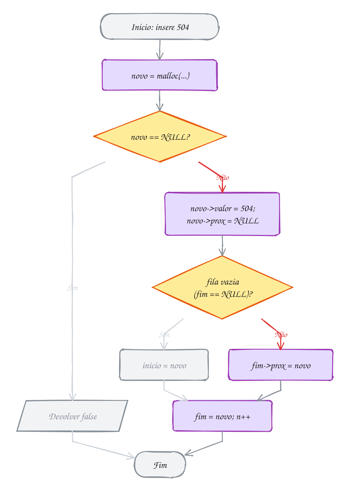
Exemplo A171 · Pedágio na sexta: a fila cresce, esvazia e recomeça
#include <stdio.h>
#include "0086-fila.h"
// a cabine libera todos os carros que estão na fila
int libera_todos(Fila *f) {
int passaram = 0;
int placa;
while (fila_retira(f, &placa)) {
passaram++;
}
return passaram;
}
int main(void) {
Fila *cabine = fila_cria();
if (cabine == NULL) {
return 1;
}
// 18h: chegam 12 carros. O painel de 8 do 0085 recusaria 4; aqui cabem todos
for (int placa = 1001; placa <= 1012; placa++) {
if (!fila_insere(cabine, placa)) {
printf("Faltou memória para o carro %d\n", placa);
}
}
int primeiro;
fila_primeiro(cabine, &primeiro);
printf("Na fila: %d carros, o primeiro é o %d\n", fila_tamanho(cabine), primeiro);
int passaram = libera_todos(cabine); // antes do printf: a ordem dos argumentos não é garantida
printf("Passaram: %d; vazia? %d\n", passaram, fila_vazia(cabine));
// 19h: a fila tinha esvaziado. O fila_retira zerou o fim lá dentro, então
// o próximo carro vira início e fim ao mesmo tempo, sem tocar no nó liberado
fila_insere(cabine, 2001);
fila_insere(cabine, 2002);
fila_primeiro(cabine, &primeiro);
printf("Recomeçou: %d carros, o primeiro é o %d\n", fila_tamanho(cabine), primeiro);
fila_libera(cabine); // libera os 2 nós que sobraram
return 0;
}
// Saída:
// Na fila: 12 carros, o primeiro é o 1001
// Passaram: 12; vazia? 1
// Recomeçou: 2 carros, o primeiro é o 2001
gcc ~/LPEDC/material/A171.c ~/LPEDC/material/0086-fila.c -o ~/LPEDC/material/A171 && ~/LPEDC/material/A171
Exemplo A172 · Simulando o caixa do mercado
#include <stdio.h>
#include "0086-fila.h"
#define CLIENTES 5
int main(void) {
int chegada[CLIENTES] = {0, 1, 2, 5, 6}; // minuto em que cada um chega
int duracao[CLIENTES] = {3, 2, 4, 1, 2}; // minutos de atendimento
Fila *fila = fila_cria(); // guarda o número de cada cliente
if (fila == NULL) {
return 1;
}
int proximo = 0; // próximo cliente a chegar
int restante = 0; // minutos que faltam para o caixa ficar livre
int atendidos = 0, espera_total = 0, maior_fila = 0;
for (int minuto = 0; atendidos < CLIENTES; minuto++) {
while (proximo < CLIENTES && chegada[proximo] == minuto) {
fila_insere(fila, proximo); // chegou: vai para o fim da fila
proximo++;
}
if (restante == 0 && !fila_vazia(fila)) { // caixa livre: chama o próximo
int c;
fila_retira(fila, &c);
int espera = minuto - chegada[c];
printf("Minuto %2d: cliente %d no caixa (esperou %d)\n", minuto, c + 1, espera);
espera_total += espera;
restante = duracao[c];
atendidos++;
}
if (fila_tamanho(fila) > maior_fila) {
maior_fila = fila_tamanho(fila);
}
if (restante > 0) {
restante--; // passa um minuto de atendimento
}
}
printf("Espera média: %.1f min; maior fila: %d\n", (double)espera_total / CLIENTES, maior_fila);
fila_libera(fila);
return 0;
}
// Saída:
// Minuto 0: cliente 1 no caixa (esperou 0)
// Minuto 3: cliente 2 no caixa (esperou 2)
// Minuto 5: cliente 3 no caixa (esperou 3)
// Minuto 9: cliente 4 no caixa (esperou 4)
// Minuto 10: cliente 5 no caixa (esperou 4)
// Espera média: 2.6 min; maior fila: 2
gcc ~/LPEDC/material/A172.c ~/LPEDC/material/0086-fila.c -o ~/LPEDC/material/A172 && ~/LPEDC/material/A172
Exercício E511 · ★☆☆
Escreva void mostra(Fila *f), que mostra a fila encadeada do fila.h do início para o fim, separando por " -> " (ou "vazia"), usando só a interface, e deixando a fila como estava. Quando houver um item só, acrescente "(um nó só: início e fim apontam para ele)". No main, insira 7, 4, 9 e 1, mostrando "insere X: " e a fila a cada inserção; a partir da segunda, retire um logo depois mostrando "retira X: " e a fila; no fim, retire mais um e mostre.
Saída esperada:
insere 7: 7 (um nó só: início e fim apontam para ele)
insere 4: 7 -> 4
retira 7: 4 (um nó só: início e fim apontam para ele)
insere 9: 4 -> 9
retira 4: 9 (um nó só: início e fim apontam para ele)
insere 1: 9 -> 1
retira 9: 1 (um nó só: início e fim apontam para ele)
retira 1: vazia
gcc ~/LPEDC/material/E511.c ~/LPEDC/material/0086-fila.c -o ~/LPEDC/material/E511 && ~/LPEDC/material/E511
Exercício E513 · ★★☆
A fila do caixa da padaria guarda o NOME de cada cliente, com um texto em cada nó. Com os tipos abaixo, escreva bool entra(FilaPadaria *f, const char *nome), que pendura o cliente no fim, e bool sai(FilaPadaria *f, char *destino), que copia o nome do primeiro para destino, tira o nó e o libera (false se não tinha ninguém). No main, entrem Ana, Bruno e Carla; atenda um; entre Davi; e atenda todos até esvaziar, mostrando "Atendendo NOME" e, no fim, "Fila vazia".
Saída esperada:
Atendendo Ana
Atendendo Bruno
Atendendo Carla
Atendendo Davi
Fila vazia
gcc ~/LPEDC/material/E513.c ~/LPEDC/material/0086-fila.c -o ~/LPEDC/material/E513 && ~/LPEDC/material/E513
Exercício E514 · ★★☆
A fila de pedidos da cozinha é encadeada, com ponteiros para o início e para o fim. Com os tipos abaixo, escreva bool cozinha_entra(Cozinha *f, int numero) e bool cozinha_sai(Cozinha *f, int *numero), que libera o nó. A fila tem que continuar funcionando depois de esvaziar e receber pedidos novos. No main, entrem os pedidos 11 e 12 e saiam todos; entrem 13 e 14 e saiam todos, mostrando "Pronto: N" a cada saída.
Saída esperada:
Pronto: 11
Pronto: 12
Pronto: 13
Pronto: 14
gcc ~/LPEDC/material/E514.c ~/LPEDC/material/0086-fila.c -o ~/LPEDC/material/E514 && ~/LPEDC/material/E514
Exercício E515 · ★★★
No banco, a lei manda atender primeiro quem tem prioridade, mas sem largar a fila comum esquecida. A regra da agência: chame 2 preferenciais, depois 1 comum, e repita. Se uma das filas estiver vazia, chame da outra. Use duas filas do fila.h. As senhas preferenciais são 101, 102 e 103; as comuns, 1, 2, 3 e 4. Mostre a ordem de chamada, com P na frente das preferenciais e C na frente das comuns.
Saída esperada:
Chamando: P101 P102 C1 P103 C2 C3 C4
gcc ~/LPEDC/material/E515.c ~/LPEDC/material/0086-fila.c -o ~/LPEDC/material/E515 && ~/LPEDC/material/E515
No app de música, a fila de reprodução tem as faixas 5, 8 e 3. Você toca em "tocar em seguida" e a faixa 11 vai para a frente. Depois se arrepende e tira a última faixa adicionada, pelo fim. A pilha só mexe numa ponta, a fila insere numa e retira na outra, e nenhuma das duas faz isso. Falta uma estrutura que aceite as duas operações nas duas pontas.
Essa estrutura é o deque, do inglês double-ended queue (pronuncia-se "deck"), também chamado de fila dupla: uma sequência que deixa inserir e retirar tanto pela frente quanto pelo fundo (CELES; RANGEL, 2002). Pense numa fila de embarque com porta nas duas pontas: a pessoa com prioridade entra pela frente, e quem desiste sai por trás.
As operações são quatro. deque_insere_inicio e deque_retira_inicio mexem
na frente; deque_insere_fim e deque_retira_fim mexem no fundo (CELES;
RANGEL, 2002). Com elas, o deque imita as estruturas anteriores. Se você só
insere e retira pelo fim, ele se comporta como pilha. Se insere pelo fim
e retira pelo início, ele se comporta como fila (TENENBAUM; LANGSAM;
AUGENSTEIN, 1995, cap. 4). Quando o item que sai é o de maior prioridade, e
não o de uma ponta, a estrutura passa a ser outra, a fila de prioridade, que
o assunto 0102 monta com heap.
A versão em vetor reaproveita a fila circular do 0085. A única novidade é que
o inicio agora anda também para trás. Para inserir na frente, ele recua
uma gaveta e o valor entra ali; se o início estava na gaveta 0, ele dá a
volta e vai para a última. Inserir no fim e retirar do início são iguais aos
da fila. Retirar do fim é o mais simples de todos: o último item fica em
(inicio + n - 1) % CAPACIDADE, e basta ler ali e diminuir n (CELES;
RANGEL, 2002). As quatro operações custam O(1), enquanto num vetor comum
inserir no início obrigaria a empurrar tudo, O(n).
A conta de recuar uma gaveta fica numa função auxiliar marcada com static.
Numa função escrita fora de qualquer bloco, static não cria variável
estática: ele tira a função da ligação externa, e ela fica privada do
arquivo (KERNIGHAN; RITCHIE, 1988). O deque.c pode usá-la, mas nenhum outro
arquivo enxerga o nome, e o TAD continua expondo só o que está no .h.
Se você quiser o deque encadeado, a lista simples não basta. Retirar do fim exige que o último nó conheça o penúltimo, para que o penúltimo passe a ser o fim. Isso pede a lista duplamente encadeada do assunto 0079, em que cada nó aponta para o próximo e para o anterior (CELES; RANGEL, 2002).
[!WARNING] Em C, o resto de negativo é negativo:
-1 % 8vale-1, não 7. Assim(inicio - 1) % CAPACIDADEcominicio = 0escreve emitens[-1]. Some a capacidade antes:(inicio - 1 + CAPACIDADE) % CAPACIDADE(CPPREFERENCE, s.d.).
No app de música, as faixas 5, 8 e 3 entram pelo fim, nas gavetas 0, 1 e 2. A 11 entra pela frente ("tocar em seguida"): o início recua da gaveta 0 e dá a volta para a 7. A ordem fica 11, 5, 8, 3:
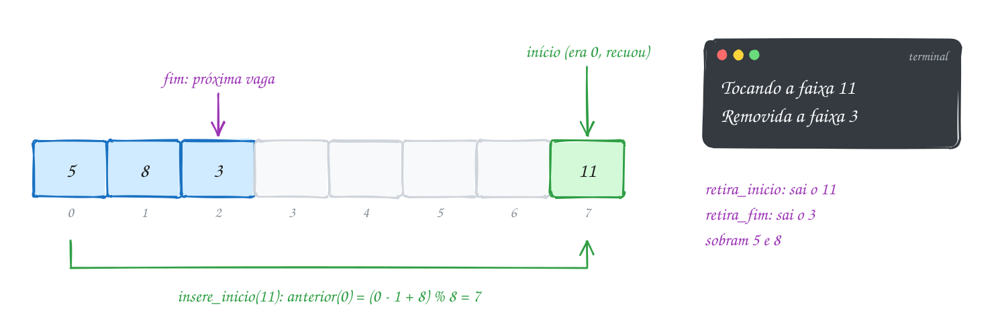
A conta do recuo fica numa função auxiliar static:
#define CAPACIDADE 8
// gaveta anterior a i, dando a volta: anterior(0) = CAPACIDADE - 1
static int anterior(int i) {
return (i - 1 + CAPACIDADE) % CAPACIDADE; // (i - 1) % CAPACIDADE daria -1 com i = 0
}
bool deque_insere_inicio(Deque *d, int valor) {
if (d->n == CAPACIDADE) {
return false;
}
d->inicio = anterior(d->inicio); // o início recua uma gaveta
d->itens[d->inicio] = valor;
d->n++;
return true;
}
bool deque_retira_fim(Deque *d, int *valor) {
if (d->n == 0) {
return false;
}
*valor = d->itens[(d->inicio + d->n - 1) % CAPACIDADE]; // o último ocupado
d->n--;
return true;
}
Programa da fila de músicas:
#include <stdio.h>
#include "deque.h"
int main(void) {
Deque *fila = deque_cria(); // guarda o número da faixa do álbum
if (fila == NULL) {
return 1;
}
deque_insere_fim(fila, 5); // "adicionar à fila": vai para o fim
deque_insere_fim(fila, 8);
deque_insere_fim(fila, 3);
deque_insere_inicio(fila, 11); // "tocar em seguida": fura a fila
// ordem agora: 11 5 8 3
int faixa;
if (deque_retira_inicio(fila, &faixa)) {
printf("Tocando a faixa %d\n", faixa);
}
if (deque_retira_fim(fila, &faixa)) { // desistiu da última que adicionou
printf("Removida a faixa %d\n", faixa);
}
printf("Ainda na fila:");
while (deque_retira_inicio(fila, &faixa)) {
printf(" %d", faixa);
}
printf("\n");
deque_libera(fila);
return 0;
}
// Saída:
// Tocando a faixa 11
// Removida a faixa 3
// Ainda na fila: 5 8
Na entrada da faixa 11, o caminho difere do da fila só no recuo do início com
anterior, que soma 8 antes do %:
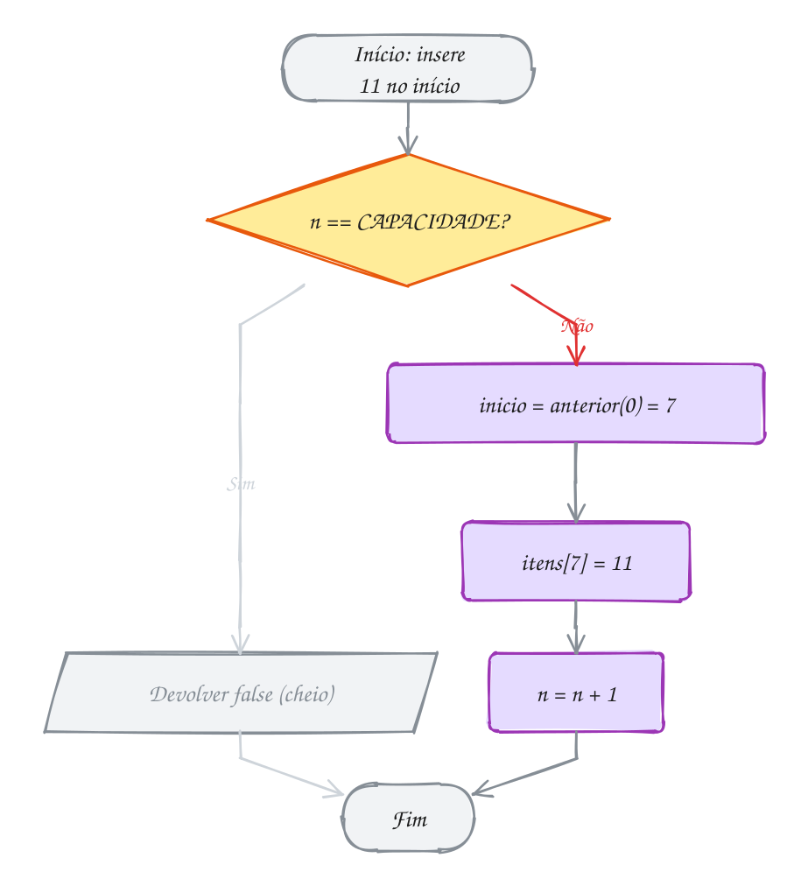
Exemplo A173 · Desfazer com limite: o deque esquece o mais antigo
#include <stdio.h>
#include "0087-deque.h"
#define LIMITE 5 // o editor de fotos só lembra os 5 últimos passos
int main(void) {
Deque *historico = deque_cria();
if (historico == NULL) {
return 1;
}
int brilho = 50;
int ajustes[] = {55, 60, 65, 70, 75, 80, 85};
for (int i = 0; i < 7; i++) {
if (deque_tamanho(historico) == LIMITE) {
int esquecido;
deque_retira_inicio(historico, &esquecido); // o mais antigo sai pela frente
printf("Esqueceu o brilho %d\n", esquecido);
}
deque_insere_fim(historico, brilho); // o valor antigo entra pelo fundo
brilho = ajustes[i];
}
printf("Brilho atual: %d\n", brilho);
// desfazer usa o fundo como uma pilha: o mais recente sai primeiro
printf("Desfazendo:");
while (deque_retira_fim(historico, &brilho)) {
printf(" %d", brilho);
}
printf("\nNão dá para desfazer mais: o brilho fica em %d\n", brilho);
deque_libera(historico);
return 0;
}
// Saída:
// Esqueceu o brilho 50
// Esqueceu o brilho 55
// Brilho atual: 85
// Desfazendo: 80 75 70 65 60
// Não dá para desfazer mais: o brilho fica em 60
gcc ~/LPEDC/material/A173.c ~/LPEDC/material/0087-deque.c -o ~/LPEDC/material/A173 && ~/LPEDC/material/A173
Exemplo A174 · Palíndromo com deque: compara as duas pontas
#include <stdbool.h>
#include <stdio.h>
#include "0087-deque.h"
bool palindromo(const char *palavra) {
Deque *d = deque_cria();
if (d == NULL) {
return false;
}
for (int i = 0; palavra[i] != '\0'; i++) {
deque_insere_fim(d, palavra[i]); // até 8 letras: a capacidade do deque.c
}
bool ok = true;
// tira uma letra de cada ponta enquanto sobrarem pelo menos duas
while (deque_tamanho(d) > 1 && ok) {
int frente, tras;
deque_retira_inicio(d, &frente);
deque_retira_fim(d, &tras);
if (frente != tras) {
ok = false;
}
}
deque_libera(d);
return ok;
}
int main(void) {
const char *palavras[] = {"RADAR", "REVIVER", "PRATO", "OSSO"};
for (int i = 0; i < 4; i++) {
printf("%-8s %s\n", palavras[i], palindromo(palavras[i]) ? "é palíndromo" : "não é");
}
return 0;
}
// Saída:
// RADAR é palíndromo
// REVIVER é palíndromo
// PRATO não é
// OSSO é palíndromo
gcc ~/LPEDC/material/A174.c ~/LPEDC/material/0087-deque.c -o ~/LPEDC/material/A174 && ~/LPEDC/material/A174
Exercício E517 · ★☆☆
Os números 1, 2, 3 e 4 chegam nessa ordem, um de cada vez, e cada um entra pela frente (deque_insere_inicio) ou pelo fundo (deque_insere_fim) de um Deque do deque.h. Escolha a ponta de cada um para que o deque fique 4 2 1 3 da frente para o fundo. Depois retire um do fundo, um da frente e mostre quem ficou na frente, quem ficou no fundo e o tamanho.
Saída esperada:
saiu do fim: 3
saiu da frente: 4
frente 2, fundo 1, tamanho 2
gcc ~/LPEDC/material/E517.c ~/LPEDC/material/0087-deque.c -o ~/LPEDC/material/E517 && ~/LPEDC/material/E517
Exercício E519 · ★★☆
No vôlei, os 6 jogadores de um time fazem rodízio. Guarde os números 1 a 6 num deque do deque.h e escreva, usando só a interface: void mostra(Deque *d), que mostra os itens da frente para o fundo e deixa o deque como estava; void gira_esquerda(Deque *d, int k), em que o da frente vai para o fundo, k vezes; e void gira_direita(Deque *d, int k), em que o do fundo vem para a frente, k vezes. Mostre o início, depois de girar 2 para a esquerda e depois de girar 3 para a direita.
Saída esperada:
Início: 1 2 3 4 5 6
Esquerda 2: 3 4 5 6 1 2
Direita 3: 6 1 2 3 4 5
gcc ~/LPEDC/material/E519.c ~/LPEDC/material/0087-deque.c -o ~/LPEDC/material/E519 && ~/LPEDC/material/E519
Exercício E520 · ★★☆
No embarque do avião, quem viaja com criança de colo entra na frente da fila e o resto entra no fim. Com a fila circular abaixo (TAM 5, campos poltronas, inicio e n), escreva bool entra_no_fim(Embarque *e, int poltrona), bool entra_na_frente(Embarque *e, int poltrona) e bool embarca(Embarque *e, int *poltrona). No main, entrem no fim as poltronas 10, 20 e 30, entre na frente a 40 e embarque todos, mostrando a ordem.
Saída esperada:
Embarcando: 40 10 20 30
gcc ~/LPEDC/material/E520.c ~/LPEDC/material/0087-deque.c -o ~/LPEDC/material/E520 && ~/LPEDC/material/E520
Exercício E521 · ★★★
O deque também pode ser feito com nós, mas com lista DUPLA: para retirar do fim, o último nó precisa conhecer o penúltimo (o ant). Com os tipos abaixo, escreva dl_insere_inicio, dl_insere_fim, dl_retira_inicio, dl_retira_fim (todas bool, as retiradas devolvem o valor por ponteiro e liberam o nó) e void dl_libera(DequeLista *d). No main, simule a fila de músicas: insira no fim as faixas 5, 8 e 3 e no início a 11; toque (retire do início) uma, remova (retire do fim) uma e mostre as que sobraram.
Saída esperada:
Tocando a faixa 11
Removida a faixa 3
Ainda na fila: 5 8
gcc ~/LPEDC/material/E521.c ~/LPEDC/material/0087-deque.c -o ~/LPEDC/material/E521 && ~/LPEDC/material/E521
No bar do 0084 você escreveu 35 25 + 3 * 4 / em pós-fixa e a pilha deu 45.
Só que ninguém digita assim. A pessoa digita (35 + 25) * 3 / 4 e quer ver
45. Para fechar o caminho, o programa precisa traduzir a notação infixa da
escola para a pós-fixa e só então fazer a conta. Este assunto junta tudo o
que o módulo construiu: uma fila e duas pilhas trabalhando em duas
etapas (TENENBAUM; LANGSAM; AUGENSTEIN, 1995, cap. 2).
A primeira etapa converte a infixa em pós-fixa. O algoritmo se chama pátio de manobras (shunting-yard) e foi criado por Dijkstra para um tradutor de Algol (DIJKSTRA, 1961). O nome vem da ferrovia: os vagões de número seguem direto pelo trilho principal até a fila de saída, e os vagões de operador esperam num desvio, que é uma pilha, até que nenhum operador mais forte precise passar na frente deles.
As regras olham um símbolo de cada vez. A precedência é a força do operador:
* e / são mais fortes que + e -, e por isso fazem a conta antes. A
tabela resume o que fazer com cada tipo de símbolo (FEOFILOFF, 2009):
| Símbolo lido | O que fazer |
|---|---|
| número | vai direto para a fila de saída |
( |
empilha |
) |
desempilha para a fila até achar o (, que é descartado |
| operador | enquanto o topo tiver precedência maior ou igual, desempilha para a fila; depois empilha o operador |
| fim da expressão | o que sobrou na pilha vai para a fila |
Com (35 + 25) * 3 / 4, a fila de saída termina como 35 25 + 3 * 4 /. O
+ ficou preso entre os parênteses e saiu no ). O * saiu quando chegou o
/, porque os dois têm a mesma força e o * estava antes.
A segunda etapa avalia a pós-fixa exatamente como no 0084. Os itens saem
da fila na ordem em que entraram (FIFO) e passam por uma pilha de
valores: número empilha, operador desempilha dois, calcula e empilha o
resultado (KERNIGHAN; RITCHIE, 1988, seç. 4.3). Quando chega o /, a pilha
tem 180 e 4, e a última conta dá 45.
Por que uma fila no meio, e não uma string? Porque a etapa 1 produz itens e a etapa 2 os consome na mesma ordem em que foram produzidos. Esse é o padrão produtor e consumidor, e a fila é a estrutura natural para ele. A fila também guarda o 35 como um número inteiro, e a avaliação não precisa juntar os dígitos de novo.
Resta um detalhe de C. A fila e a pilha do curso só guardam int, e a fila
de saída mistura números e operadores. Como os números da calculadora são
sempre >= 0, os operadores viram códigos negativos num enum (assunto
0063): SOMA = -1, SUB = -2 e assim por diante. Na avaliação, t >= 0 é
número e t < 0 é operador. A alternativa seria uma struct com uma
etiqueta que diz o tipo do item. O nome dos tipos não atrapalha: No e
NoFila podiam até ser iguais em arquivos separados, porque tipo não tem
ligação. O conflito só aparece entre funções de mesmo nome, e por isso
cada TAD prefixa as suas com pilha_ ou fila_.
A calculadora inteira é O(n) para uma expressão de n símbolos: cada símbolo entra e sai da fila uma vez, e de cada pilha no máximo uma vez.
[!WARNING] O "maior ou igual" muda o resultado. Só com "maior",
8 - 3 - 2vira8 3 2 - -, que dá 7; o certo é(8 - 3) - 2 = 3. Mesma precedência associa à esquerda: o que já está na pilha sai antes do novo.
A conta do bar, digitada como (35 + 25) * 3 / 4. A fila de saída fica
35 25 + 3 * 4 /; quando chega o /, a pilha de valores tem 180 e 4, e a
última conta dá 45:
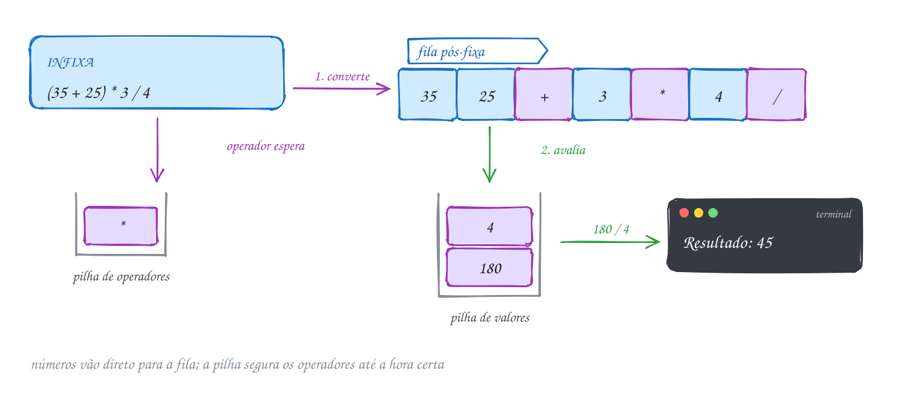
A pasta tem o pilha.c do 0083 e o fila.c do 0086; o comando do exemplo
compila os quatro com o programa:
#include <stdbool.h>
#include <stdio.h>
#include "fila.h"
#include "pilha.h"
// Na fila e na pilha só cabe int. Números são >= 0; operadores e o "("
// viram códigos negativos, que nunca se confundem com um número.
enum { SOMA = -1, SUB = -2, MULT = -3, DIV = -4, ABRE = -5 };
int codigo_de(char c) {
return c == '+' ? SOMA : c == '-' ? SUB : c == '*' ? MULT : DIV;
}
int precedencia(int op) {
return (op == MULT || op == DIV) ? 2 : (op == SOMA || op == SUB) ? 1 : 0; // ABRE: 0
}
// Etapa 1: infixa -> fila em ordem pós-fixa. A pilha segura os operadores.
bool converte(const char *s, Fila *saida) {
Pilha *ops = pilha_cria();
if (ops == NULL) {
return false;
}
int topo;
for (int i = 0; s[i] != '\0'; i++) {
char c = s[i];
if (c >= '0' && c <= '9') {
int numero = 0;
for (; s[i] >= '0' && s[i] <= '9'; i++) {
numero = numero * 10 + (s[i] - '0');
}
i--;
fila_insere(saida, numero); // número vai direto para a saída
} else if (c == '(') {
pilha_empilha(ops, ABRE);
} else if (c == ')') {
while (pilha_desempilha(ops, &topo) && topo != ABRE) {
fila_insere(saida, topo);
}
} else if (c == '+' || c == '-' || c == '*' || c == '/') {
int op = codigo_de(c);
// sai antes quem tem precedência maior ou igual (conta da esquerda primeiro)
while (pilha_topo(ops, &topo) && precedencia(topo) >= precedencia(op)) {
pilha_desempilha(ops, &topo);
fila_insere(saida, topo);
}
pilha_empilha(ops, op);
}
}
while (pilha_desempilha(ops, &topo)) {
fila_insere(saida, topo);
}
pilha_libera(ops);
return true;
}
// Etapa 2: consome a fila pós-fixa com uma pilha de valores.
bool avalia(Fila *posfixa, int *resultado) {
Pilha *val = pilha_cria();
if (val == NULL) {
return false;
}
bool ok = true;
int t, a, b;
printf("Pós-fixa: ");
while (ok && fila_retira(posfixa, &t)) {
if (t >= 0) {
printf(" %d", t);
pilha_empilha(val, t);
} else if (!pilha_desempilha(val, &b) || !pilha_desempilha(val, &a) || (t == DIV && b == 0)) {
ok = false;
} else {
printf(" %c", t == SOMA ? '+' : t == SUB ? '-' : t == MULT ? '*' : '/');
pilha_empilha(val, t == SOMA ? a + b : t == SUB ? a - b : t == MULT ? a * b : a / b);
}
}
printf("\n");
ok = ok && pilha_desempilha(val, resultado) && pilha_vazia(val);
pilha_libera(val);
return ok;
}
int main(void) {
const char *contas[] = {"(35 + 25) * 3 / 4", "2 * (3 + 4) - 10 / 5"};
for (int i = 0; i < 2; i++) {
Fila *posfixa = fila_cria();
if (posfixa == NULL) {
return 1;
}
int r;
printf("Infixa: %s\n", contas[i]);
if (converte(contas[i], posfixa) && avalia(posfixa, &r)) {
printf("Resultado: %d\n", r);
} else {
printf("Expressão inválida\n");
}
fila_libera(posfixa);
}
return 0;
}
// Saída:
// Infixa: (35 + 25) * 3 / 4
// Pós-fixa: 35 25 + 3 * 4 /
// Resultado: 45
// Infixa: 2 * (3 + 4) - 10 / 5
// Pós-fixa: 2 3 4 + * 10 5 / -
// Resultado: 12
As perguntas de erro só aparecem na avaliação, onde a falta de operando e a divisão por zero se revelam:
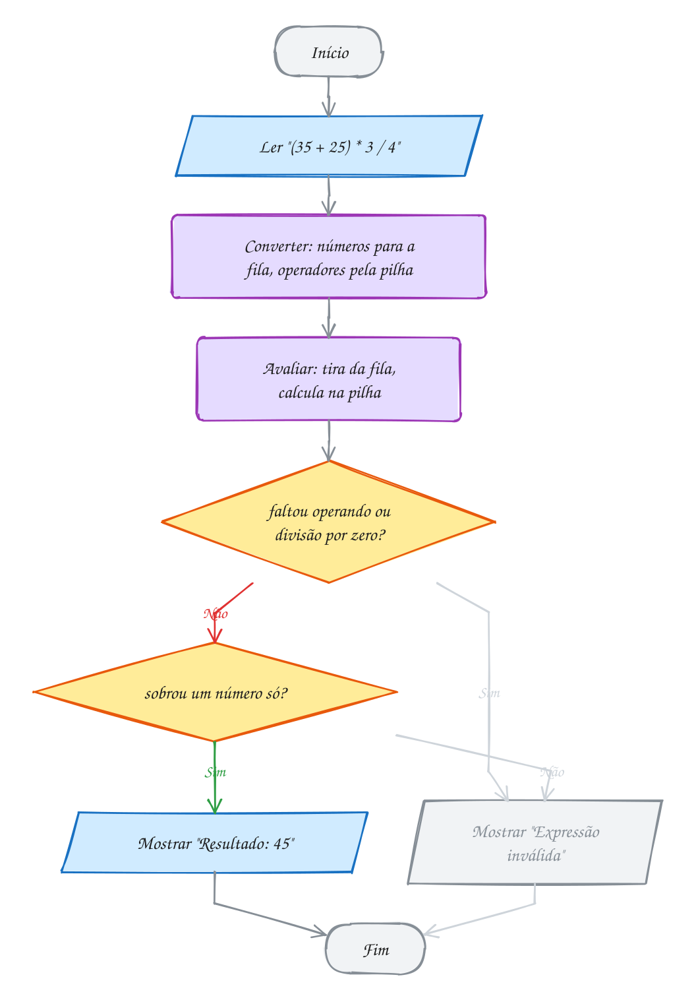
Exemplo A175 · A calculadora que explica o erro
#include <stdio.h>
#include "0088-fila.h"
#include "0088-pilha.h"
enum { SOMA = -1, SUB = -2, MULT = -3, DIV = -4, ABRE = -5 };
// códigos de erro: cada etapa descobre os seus
enum { OK, FECHA_SEM_ABRIR, FALTOU_FECHAR, FALTA_OPERANDO, DIV_ZERO, SOBROU_NUMERO, SEM_MEMORIA };
const char *mensagem[] = {
"ok", "')' sem '(' antes", "'(' sem ')' depois",
"falta operando", "divisão por zero", "sobrou número", "faltou memória",
};
int precedencia(int op) {
return (op == MULT || op == DIV) ? 2 : (op == SOMA || op == SUB) ? 1 : 0;
}
// Etapa 1. Os erros de parêntese só aparecem aqui: na fila pós-fixa não
// existe parêntese nenhum, e um ABRE perdido lá dentro viraria lixo na conta.
int converte(const char *s, Fila *saida) {
Pilha *ops = pilha_cria();
if (ops == NULL) {
return SEM_MEMORIA;
}
int erro = OK;
int topo;
for (int i = 0; s[i] != '\0' && erro == OK; i++) {
char c = s[i];
if (c >= '0' && c <= '9') {
int numero = 0;
for (; s[i] >= '0' && s[i] <= '9'; i++) {
numero = numero * 10 + (s[i] - '0');
}
i--;
fila_insere(saida, numero);
} else if (c == '(') {
pilha_empilha(ops, ABRE);
} else if (c == ')') {
topo = 0; // se a pilha já estiver vazia, topo não pode ficar com lixo
while (pilha_desempilha(ops, &topo) && topo != ABRE) {
fila_insere(saida, topo);
}
if (topo != ABRE) {
erro = FECHA_SEM_ABRIR; // a pilha acabou antes de achar o '('
}
} else if (c == '+' || c == '-' || c == '*' || c == '/') {
int op = c == '+' ? SOMA : c == '-' ? SUB : c == '*' ? MULT : DIV;
while (pilha_topo(ops, &topo) && precedencia(topo) >= precedencia(op)) {
pilha_desempilha(ops, &topo);
fila_insere(saida, topo);
}
pilha_empilha(ops, op);
}
}
while (erro == OK && pilha_desempilha(ops, &topo)) {
if (topo == ABRE) {
erro = FALTOU_FECHAR; // sobrou um '(' que ninguém fechou
} else {
fila_insere(saida, topo);
}
}
pilha_libera(ops);
return erro;
}
// Etapa 2. Aqui aparecem os erros de conta.
int avalia(Fila *posfixa, int *resultado) {
Pilha *val = pilha_cria();
if (val == NULL) {
return SEM_MEMORIA;
}
int erro = OK;
int t, a, b;
while (erro == OK && fila_retira(posfixa, &t)) {
if (t >= 0) {
pilha_empilha(val, t);
} else if (!pilha_desempilha(val, &b) || !pilha_desempilha(val, &a)) {
erro = FALTA_OPERANDO;
} else if (t == DIV && b == 0) {
erro = DIV_ZERO;
} else {
pilha_empilha(val, t == SOMA ? a + b : t == SUB ? a - b : t == MULT ? a * b : a / b);
}
}
if (erro == OK && (!pilha_desempilha(val, resultado) || !pilha_vazia(val))) {
erro = pilha_vazia(val) ? FALTA_OPERANDO : SOBROU_NUMERO;
}
pilha_libera(val);
return erro;
}
int main(void) {
const char *contas[] = {"(10 + 2) * 3", "10 / (5 - 5)", "4 * (2 + 3", "4 + 2) * 3", "7 * + 2", "(8) 9"};
for (int i = 0; i < 6; i++) {
Fila *posfixa = fila_cria();
if (posfixa == NULL) {
return 1;
}
int r = 0;
int erro = converte(contas[i], posfixa);
if (erro == OK) {
erro = avalia(posfixa, &r);
}
if (erro == OK) {
printf("%-14s = %d\n", contas[i], r);
} else {
printf("%-14s erro: %s\n", contas[i], mensagem[erro]);
}
fila_libera(posfixa); // libera também o que sobrou na fila depois de um erro
}
return 0;
}
// Saída:
// (10 + 2) * 3 = 36
// 10 / (5 - 5) erro: divisão por zero
// 4 * (2 + 3 erro: '(' sem ')' depois
// 4 + 2) * 3 erro: ')' sem '(' antes
// 7 * + 2 erro: falta operando
// (8) 9 erro: sobrou número
gcc ~/LPEDC/material/A175.c ~/LPEDC/material/0088-fila.c ~/LPEDC/material/0088-pilha.c -o ~/LPEDC/material/A175 && ~/LPEDC/material/A175
Exemplo A176 · Palíndromo com uma fila e uma pilha
#include <ctype.h>
#include <stdbool.h>
#include <stdio.h>
#include "0088-fila.h"
#include "0088-pilha.h"
// A fila devolve as letras na ordem em que entraram; a pilha, ao contrário.
// Se as duas sequências forem iguais, a frase é um palíndromo.
bool palindromo(const char *frase) {
Fila *f = fila_cria();
Pilha *p = pilha_cria();
bool ok = f != NULL && p != NULL;
for (int i = 0; ok && frase[i] != '\0'; i++) {
unsigned char c = (unsigned char)frase[i];
if (isalpha(c)) { // ignora espaços e pontuação
int letra = toupper(c);
fila_insere(f, letra);
pilha_empilha(p, letra);
}
}
int da_fila, da_pilha;
while (ok && fila_retira(f, &da_fila) && pilha_desempilha(p, &da_pilha)) {
if (da_fila != da_pilha) {
ok = false;
}
}
if (f != NULL) {
fila_libera(f);
}
if (p != NULL) {
pilha_libera(p);
}
return ok;
}
int main(void) {
// sem acentos de propósito: em UTF-8, "ô" ocupa 2 bytes e isalpha não o
// reconhece como letra
const char *frases[] = {"Socorram-me, subi no onibus em Marrocos", "A base do teto desaba", "Pilha e fila"};
for (int i = 0; i < 3; i++) {
printf("%s: %s\n", frases[i], palindromo(frases[i]) ? "sim" : "não");
}
return 0;
}
// Saída:
// Socorram-me, subi no onibus em Marrocos: sim
// A base do teto desaba: sim
// Pilha e fila: não
gcc ~/LPEDC/material/A176.c ~/LPEDC/material/0088-fila.c ~/LPEDC/material/0088-pilha.c -o ~/LPEDC/material/A176 && ~/LPEDC/material/A176
Exercício E523 · ★☆☆
Uma calculadora de expressões em duas etapas. Etapa 1, à mão: converta 2 * (3 + 4) e 2 * 3 + 4 para pós-fixa e insira os itens em duas filas do fila.h (operadores como códigos negativos do enum abaixo). Etapa 2: escreva bool avalia(Fila *posfixa, int *resultado), que consome a fila com uma pilha do pilha.h, mostrando cada item seguido de um espaço, e devolve false se a fila for inválida. No main, mostre a infixa, a pós-fixa e o resultado de cada conta.
Saída esperada:
2 * (3 + 4) -> 2 3 4 + * = 14
2 * 3 + 4 -> 2 3 * 4 + = 10
gcc ~/LPEDC/material/E523.c ~/LPEDC/material/0088-fila.c ~/LPEDC/material/0088-pilha.c -o ~/LPEDC/material/E523 && ~/LPEDC/material/E523
Exercício E525 · ★★☆
Pergunta clássica de entrevista: faça uma FILA usando só duas PILHAS. Escreva o tipo FilaDuasPilhas, com duas Pilha * (entrada e saida) do pilha.h, e as funções bool fdp_insere(FilaDuasPilhas *f, int valor) e bool fdp_retira(FilaDuasPilhas *f, int *valor). No main, insira 1, 2 e 3, retire um e mostre, insira 4 e retire todos mostrando a ordem.
Saída esperada:
Saiu: 1
Depois: 2 3 4
gcc ~/LPEDC/material/E525.c ~/LPEDC/material/0088-fila.c ~/LPEDC/material/0088-pilha.c -o ~/LPEDC/material/E525 && ~/LPEDC/material/E525
Exercício E526 · ★★☆
Calculadora enxuta (operandos de um dígito, + - * /, sem parênteses). Com uma pilha do pilha.h e uma fila do fila.h, escreva void converte(const char *s, Fila *saida), que passa a infixa para a pós-fixa (guardando os caracteres na fila), e int avalia(Fila posfixa), que consome a fila, mostra cada item seguido de um espaço e devolve o resultado. Operadores de mesma precedência associam à esquerda. No main, para "2+34", "8-3-2" e "9/3/3", mostre a conta, a pós-fixa e o resultado.
Saída esperada:
2+3*4 -> 2 3 4 * + = 14
8-3-2 -> 8 3 - 2 - = 3
9/3/3 -> 9 3 / 3 / = 1
gcc ~/LPEDC/material/E526.c ~/LPEDC/material/0088-fila.c ~/LPEDC/material/0088-pilha.c -o ~/LPEDC/material/E526 && ~/LPEDC/material/E526
Exercício E527 · ★★★
O estacionamento da vila é um beco sem saída com 4 vagas em fila indiana: quem entrou por último fica na boca do beco. Para um carro do fundo sair, os da frente saem para a rua (cada um conta uma MANOBRA), ele vai embora e os outros voltam na mesma ordem. Com o beco cheio, quem chega espera numa fila na rua e entra assim que abrir vaga. Simule com uma pilha (o beco), uma pilha auxiliar (a manobra) e uma fila (a espera): entram 1, 2, 3, 4 e 5; saem 2, 1, 4, 3 e 5. Ao sair, mostre as manobras daquele carro.
Saída esperada:
Carro 5 espera na rua
Carro 2 saiu; manobras: 0
Carro 5 entrou (vinha da fila)
Carro 1 saiu; manobras: 0
Carro 4 saiu; manobras: 2
Carro 3 saiu; manobras: 2
Carro 5 saiu; manobras: 3
gcc ~/LPEDC/material/E527.c ~/LPEDC/material/0088-fila.c ~/LPEDC/material/0088-pilha.c -o ~/LPEDC/material/E527 && ~/LPEDC/material/E527
30 exercícios que misturam os assuntos do módulo, no ritmo da prova. Arquivos P1201.c a P1230.c, em material/; resoluções em _respostas/12-pilhas-e-filas/lista/.
Exercício P1201 · ★☆☆ · O painel de LEDs em binário
O painel da estação mostra números em binário. Para converter, divida por 2 até chegar a zero: os restos saem do bit menos significativo para o mais significativo, ou seja, AO CONTRÁRIO da ordem de leitura. Uma pilha desinverte. Escreva uma pilha de int sobre vetor (32 posições) com empilha, desempilha e vazia, e a função
void binario(int n) // mostra n em binário, usando a pilha
Mostre 13, 156, 1024 e 0.
Saída esperada:
13 = 1101
156 = 10011100
1024 = 10000000000
0 = 0
Exercício P1202 · ★☆☆ · Os índices da fila circular, passo a passo
A fila do ponto de ônibus cabe num vetor de 5 posições usado em círculo, com três campos: inicio (quem sai primeiro), fim (a próxima vaga) e n (quantos estão na fila). Escreva insere e retira (devolvendo false quando a fila está cheia ou vazia) e uma função que mostra o estado. Faça, nesta ordem, mostrando o estado depois de cada uma: insere 10, 20 e 30; retira duas vezes; insere 40, 50, 60 e 70; insere 80.
Saída esperada:
insere 10: inicio=0 fim=1 n=1
insere 20: inicio=0 fim=2 n=2
insere 30: inicio=0 fim=3 n=3
retira 10: inicio=1 fim=3 n=2
retira 20: inicio=2 fim=3 n=1
insere 40: inicio=2 fim=4 n=2
insere 50: inicio=2 fim=0 n=3
insere 60: inicio=2 fim=1 n=4
insere 70: inicio=2 fim=2 n=5
insere 80: fila cheia
Exercício P1203 · ★☆☆ · A pilha de livros da cabeceira
Os livros da cabeceira formam uma pilha: o último que você pôs em cima é o primeiro que pega. Escreva uma pilha ENCADEADA de livros (título e páginas), com:
Livro *empilha(Livro *topo, const char *titulo, int paginas)
Livro *desempilha(Livro *topo, char *titulo, int *paginas)
int total_paginas(const Livro *topo)
(empilha e desempilha devolvem o novo topo; desempilha copia o título e as páginas do livro que saiu e libera o nó). Empilhe Dom Casmurro (256), Vidas Secas (176) e Capitães da Areia (280), mostre o topo e o total de páginas, e desempilhe todos, mostrando cada um.
Saída esperada:
Topo: Capitães da Areia
Páginas na pilha: 712
Pegou Capitães da Areia (280 páginas)
Pegou Vidas Secas (176 páginas)
Pegou Dom Casmurro (256 páginas)
Resposta esperada: a saída acima, sem vazamento.
Exercício P1204 · ★☆☆ · Quão fundo vão os parênteses?
A planilha aceita fórmulas com (), [] e {}. Escreva
int profundidade(const char *s)
que confere se os delimitadores estão bem casados (com uma pilha de char sobre vetor) e devolve a PROFUNDIDADE máxima de aninhamento, ou -1 se a fórmula estiver mal formada. Os outros caracteres são ignorados.
Saída esperada:
(a+b): 1
{[(x)]}: 3
(a)[b]{c}: 1
((1+2)*[3-(4/5)]): 3
([)]: -1
((: -1
Exercício P1205 · ★☆☆ · A fila do forno da pizzaria
Os pedidos entram no forno na ordem em que chegam. Escreva uma fila ENCADEADA de pedidos (nome do cliente e sabor), com ponteiros para o início e o fim, e as operações entra (no fim), sai (do início, copiando o pedido e liberando o nó) e tamanho (guardado num campo, O(1)). Faça: entram Ana/calabresa, Beto/marguerita e Caio/portuguesa; sai um; entra Duda/frango; mostre o tamanho e esvazie a fila.
Saída esperada:
Saiu: Ana (calabresa)
Na fila: 3 pedidos
Saiu: Beto (marguerita)
Saiu: Caio (portuguesa)
Saiu: Duda (frango)
Na fila: 0 pedidos
Exercício P1206 · ★☆☆ · Palíndromo pelas duas pontas do deque
Um deque deixa tirar dos dois lados, e isso resolve o palíndromo: ponha todas as letras no deque e vá tirando uma da frente e uma de trás, comparando. Escreva um deque de char sobre vetor circular (capacidade 32) com insere_fim, retira_inicio, retira_fim e tamanho, e
bool palindromo(const char *palavra)
Teste com arara, osso, ovo, casa e a.
Saída esperada:
arara: sim
osso: sim
ovo: sim
casa: não
a: sim
Exercício P1207 · ★☆☆ · A pilha de bandejas que transborda
No balcão cabem 4 bandejas. A pilha abaixo guarda as bandejas num vetor alocado com malloc. Ela compila sem aviso, mas tem DOIS erros de propósito, e o sanitizer acusa "heap-buffer-overflow". Um erro deixa empilhar a 5ª bandeja (que não cabe); o outro faz desempilhar ler a posição errada. Conserte os dois para a saída ficar:
Saída esperada:
empilha 1: ok
empilha 2: ok
empilha 3: ok
empilha 4: ok
empilha 5: pilha cheia
desempilha: 4 3 2 1
Resposta esperada: o teste de cheia é n >= CAP (ou n == CAP), não n > CAP; e desempilha faz *x = v[--n], não v[n--].
Exercício P1208 · ★☆☆ · O jogo das bolhas de mesma cor
No joguinho do celular, as bolhas caem em fila, e duas bolhas da MESMA cor que ficam encostadas estouram. Quando um par estoura, as vizinhas se encostam e podem estourar também. Cada cor é uma letra. Escreva
void estoura(const char *bolhas, char *sobra)
que usa uma pilha de char: para cada bolha, se ela é igual à do topo, o topo sai (as duas estouram); senão, ela é empilhada. No fim, a pilha (de baixo para cima) é o que sobrou. Teste com abbaca, aabbcc, azxxzy e abc.
Saída esperada:
abbaca -> ca
aabbcc -> (nada)
azxxzy -> ay
abc -> abc
Resposta esperada: Cada bolha entra e sai no máximo uma vez: O(n).
Exercício P1209 · ★☆☆ · Por que a fila em vetor é circular
Um jeito ingênuo de fazer fila em vetor: o primeiro está SEMPRE em v[0]; para retirar, todo mundo anda uma casa para a frente. Escreva essa fila (insere no fim, retira de v[0] deslocando os outros) contando os deslocamentos, e a fila circular (inicio, n) contando os mesmos. Nas duas, insira as senhas 1 a 5 e depois retire as 5, mostrando a ordem em que saíram.
Saída esperada:
Deslocando: saíram 1 2 3 4 5 com 10 deslocamentos
Circular: saíram 1 2 3 4 5 com 0 deslocamentos
Exercício P1210 · ★☆☆ · Copiar a pilha sem virar de cabeça para baixo
O caixa quer uma CÓPIA da pilha de comandas para conferir, sem mexer na original. Copiar desempilhando de uma e empilhando na outra inverte a ordem. Com uma pilha AUXILIAR dá certo. Usando só as operações da pilha encadeada abaixo (empilha, desempilha, vazia), escreva
No *copia(No **original)
que devolve uma pilha nova com os mesmos itens na mesma ordem e deixa a original exatamente como estava. Depois, desempilhe a cópia toda e mostre que a original continua inteira.
Saída esperada:
original (topo primeiro): 30 20 10
cópia (topo primeiro): 30 20 10
desempilhando a cópia: 30 20 10
original depois: 30 20 10
Resposta esperada: Cada item é movido 3 vezes: O(n).
Exercício P1211 · ★★☆ · Pós-fixa com potência (que associa à direita)
Escreva void para_posfixa(const char *in, char *out), que converte uma expressão infixa com variáveis de UMA letra (A a Z), os operadores + - * / ^ e parênteses para a notação pós-fixa, com uma pilha de operadores. A potência tem a maior precedência e associa à DIREITA: A^B^C é A^(B^C). Os outros associam à esquerda: A-B-C é (A-B)-C.
Saída esperada:
A+B*C -> ABC*+
(A+B)*C -> AB+C*
A-B-C -> AB-C-
A^B^C -> ABC^^
A*(B+C)^D -> ABC+D^*
A/B^C-D -> ABC^/D-
Exercício P1212 · ★★☆ · Uma pilha feita com duas filas
A recíproca da fila com duas pilhas: faça uma PILHA usando só duas FILAS. Escreva uma fila circular de int sobre vetor (capacidade 8: insere, retira, vazia, tamanho) e, em cima dela, o tipo
typedef struct { Fila a, b; } PilhaDeFilas;
com pdf_empilha e pdf_desempilha. Regra: a fila a guarda os itens com o TOPO NA FRENTE. Para empilhar x, ponha x na fila b vazia, passe todos de a para b (atrás do x) e troque os papéis de a e b. Conte quantos itens passaram de uma fila para outra. Faça: empilha 1, 2 e 3; desempilha; empilha 4; desempilha até esvaziar.
Saída esperada:
desempilha: 3
desempilha até o fim: 4 2 1
itens movidos entre as filas: 5
Exercício P1213 · ★★☆ · A caixa-preta que guarda só as últimas leituras
A caixa-preta do caminhão guarda só as 4 últimas leituras de velocidade: quando chega uma nova com o buffer cheio, a MAIS ANTIGA é descartada para abrir espaço. É uma fila circular que, em vez de recusar, sobrescreve. Escreva
void registra(Buffer *b, int leitura) // nunca falha
void mostra(const Buffer *b) // da mais antiga à mais nova
e conte quantas leituras foram sobrescritas. Registre 60, 72, 80, 85, 90, 70 e 65 km/h, mostrando o buffer depois da 4ª e no fim.
Saída esperada:
depois de 4: 60 72 80 85
no fim: 85 90 70 65
sobrescritas: 3
Resposta esperada: Cada registro é O(1), não importa quantas leituras já passaram.
Exercício P1214 · ★★☆ · O jogo das cartas nas pontas
As cartas 3, 9, 1, 2, 7 e 5 estão enfileiradas na mesa. Ana e Beto jogam alternados, Ana primeiro: na sua vez, cada um pega a carta de UMA DAS PONTAS, sempre a maior das duas (no empate, a da esquerda). Ponha as cartas num deque de int sobre vetor circular e simule com primeiro, ultimo, retira_inicio e retira_fim. Mostre cada jogada e os totais.
Saída esperada:
Ana pega 5 (direita)
Beto pega 7 (direita)
Ana pega 3 (esquerda)
Beto pega 9 (esquerda)
Ana pega 2 (direita)
Beto pega 1 (esquerda)
Ana: 10 pontos, Beto: 17 pontos
Exercício P1215 · ★★☆ · Avaliar a notação PREfixa
Na notação prefixa (a polonesa original), o operador vem ANTES dos operandos: "+ 9 * 2 3" é 9 + (2 * 3). Ela também dispensa parênteses e também se avalia com uma pilha, só que lendo a expressão da DIREITA para a ESQUERDA. Escreva
int avalia_prefixa(const char *s, int *resultado)
para operandos de um dígito, operadores + - * / e espaços entre os itens. Devolve 1 se deu certo ou 0 se a expressão é inválida (faltou operando, sobrou operando ou divisão por zero).
Saída esperada:
+ 9 * 2 3 = 15
- * 5 6 / 8 2 = 26
* + 1 2 + 3 4 = 21
- 8 3 = 5
+ 1: inválida
/ 7 0: inválida
Exercício P1216 · ★★☆ · Quantos dias até esquentar?
As máximas da semana foram 28, 26, 27, 30, 25, 29 e 31 graus. Para cada dia, quantos dias você espera até uma máxima MAIOR que a dele? (0 se não vier nenhuma.) Com dois laços sai em O(n²). Com uma pilha de ÍNDICES sai em O(n): a pilha guarda os dias que ainda esperam por um dia mais quente. Escreva
void espera(const int t[], int n, int resposta[], int *operacoes)
contando em *operacoes os empilha e desempilha.
Saída esperada:
28 26 27 30 25 29 31
3 1 1 3 1 1 0
operações na pilha: 13
Resposta esperada: a saída acima (cada número com "%2d" e um espaço entre eles).
Exercício P1217 · ★★☆ · Embaralhar a fila como um baralho
Para o sorteio da quadrilha junina, a fila de pares 1 a 8 deve ser "embaralhada" como um baralho: a primeira metade intercalada com a segunda, 1 5 2 6 3 7 4 8. Escreva
void intercala_metades(Fila *f)
usando só insere, retira e tamanho de uma fila circular de int, mais UMA fila auxiliar. O tamanho é sempre par.
Saída esperada:
antes: 1 2 3 4 5 6 7 8
depois: 1 5 2 6 3 7 4 8
antes: 10 20 30 40
depois: 10 30 20 40
Resposta esperada: Cada item é movido O(1) vezes: O(n).
Exercício P1218 · ★★☆ · A fila do lava-jato que trava
O lava-jato tem vaga para 4 carros na fila. A fila circular abaixo (com inicio, fim e n) compila sem aviso, mas tem TRÊS erros de propósito: um em insere e dois em retira. O resultado é que a fila "trava" e recusa carros que cabem. Conserte os três para a saída ficar:
Saída esperada:
entram 1 2 3
saem 1 2
entram 4 5 6
saem até esvaziar: 3 4 5 6
Resposta esperada: em insere, fim = (fim + 1) % CAP; em retira, teste vazia com n == 0 e faça n-- ao retirar.
Exercício P1219 · ★★☆ · O Ctrl+Z do bloco de notas
Todo editor guarda as operações numa PILHA: desfazer é desempilhar a última e fazer o contrário dela. Escreva um mini editor com um texto (char[100]) e uma pilha de operações sobre vetor (até 20), em que cada operação guarda o tipo ('D' digitou, 'A' apagou) e o pedaço de texto envolvido:
void digita(Editor *e, const char *s) // põe s no fim e empilha {'D', s}
void apaga(Editor *e, int k) // tira os k últimos e empilha
// {'A', o que foi apagado}
bool desfaz(Editor *e) // false se não há o que desfazer
Faça: digita "Bom", digita " dia", apaga 3, digita "tarde" e depois desfaz cinco vezes, mostrando o texto entre colchetes a cada passo.
Saída esperada:
digita: [Bom]
digita: [Bom dia]
apaga: [Bom ]
digita: [Bom tarde]
desfaz: [Bom ]
desfaz: [Bom dia]
desfaz: [Bom]
desfaz: []
desfaz: nada para desfazer
Exercício P1220 · ★★☆ · Um painel para dois guichês
Dois guichês do Detran emitem senhas com o horário de chegada (em minutos depois das 8h), e cada guichê tem a sua fila, já em ordem de chegada. O painel novo chama todo mundo numa fila ÚNICA, também por ordem de chegada. Escreva uma fila encadeada de int (entra, sai, frente, vazia) e
void junta(Fila *a, Fila *b, Fila *painel)
que move todos os itens de a e b para o painel, sempre o de menor horário primeiro (no empate, o de a), usando SÓ essas quatro operações.
Saída esperada:
guichê A: 5 12 20
guichê B: 7 8 25 30
painel: 5 7 8 12 20 25 30
A e B vazias: sim
Exercício P1221 · ★★★ · O banco em que o cliente desiste
Simule a fila de uma agência com UM caixa. Cada cliente tem nome, minuto de chegada, minutos de atendimento e TOLERÂNCIA (quantos minutos aceita esperar). Quando o caixa fica livre, ele chama o primeiro da fila; se esse cliente já esperou MAIS que a tolerância, ele tinha ido embora: o caixa registra a desistência e chama o próximo, no mesmo minuto.
cliente chegada atendimento tolerância
Ana 0 5 10
Beto 1 3 2
Caio 2 4 10
Duda 3 2 1
Edu 8 3 5
Fabi 9 1 0
Use uma fila encadeada de structs e um relógio que avança de minuto em minuto: em cada minuto, primeiro entram na fila os que chegaram, depois o caixa (se livre) chama. Mostre cada chamada e o resumo.
Saída esperada:
min 0: atende Ana (esperou 0)
min 5: Beto tinha desistido
min 5: atende Caio (esperou 3)
min 9: Duda tinha desistido
min 9: atende Edu (esperou 1)
min 12: Fabi tinha desistido
Atendidos: 3, desistências: 3
Espera média dos atendidos: 1.33 min
Resposta esperada: a saída acima ((0 + 3 + 1) / 3 = 1.33).
Exercício P1222 · ★★★ · Calcular a infixa direto, com duas pilhas
Dá para avaliar uma expressão infixa SEM gerar a pós-fixa antes: o algoritmo das duas pilhas usa uma pilha de VALORES (int) e uma de OPERADORES (char). Escreva
int avalia(const char *s, int *resultado)
para operandos de um dígito, + - * / e parênteses (sem espaços). Devolve 1 se deu certo ou 0 se faltou operando ou houve divisão por zero.
Saída esperada:
2+3*4 = 14
(2+3)*4 = 20
8-3-2 = 3
9/3/3 = 1
2*(3+4)-5 = 9
7/(2-2): erro
Exercício P1223 · ★★★ · O menor caminho na feira (busca em largura)
O mapa da feira tem corredores livres ('.'), barracas ('#'), a entrada (S) e a barraca do açaí (F). Você anda uma casa por passo, para cima, baixo, esquerda ou direita. Qual o MENOR número de passos de S até F? Uma FILA resolve: a partir de S, visite primeiro todas as casas a 1 passo, depois todas a 2 passos, e assim por diante (é a busca em largura).
S.#...
.##.#.
...#..
#....#
...#.F
Escreva o programa com uma fila circular de posições (linha, coluna), uma matriz de distâncias (-1 = não visitada) e uma matriz de "de onde vim" para refazer o caminho. Mostre o número de passos e o mapa com o caminho marcado com '*' (sem apagar S e F). Na hora de visitar vizinhos, use a ordem: cima, baixo, esquerda, direita.
Saída esperada:
Menor caminho: 9 passos
S.#...
*##.#.
**.#..
#****#
...#*F
Exercício P1224 · ★★★ · A Torre de Hanói sem recursão
Cada pino da Torre de Hanói é uma PILHA de discos: só se mexe no disco de cima, e nunca um disco maior sobre um menor. Há um jeito iterativo de resolver, sem recursão nenhuma: com n ímpar, repita em ciclo os pares de pinos (A, C), (A, B), (B, C); com n par, (A, B), (A, C), (B, C). Em cada par, faça o ÚNICO movimento permitido entre os dois pinos (o disco menor vai para cima do maior, ou para o pino vazio). Pare quando os n discos estiverem em C. Escreva o programa com três pilhas de int sobre vetor, para n = 3, numerando os movimentos.
Saída esperada:
1. disco 1: A -> C
2. disco 2: A -> B
3. disco 1: C -> B
4. disco 3: A -> C
5. disco 1: B -> A
6. disco 2: B -> C
7. disco 1: A -> C
Pino C (de baixo para cima): 3 2 1
Exercício P1225 · ★★★ · Os lagos da várzea (preenchimento com pilha)
Na foto de satélite da várzea, '~' é água e '.' é terra. Um LAGO é um grupo de casas de água ligadas por cima, baixo, esquerda ou direita. Quantos lagos há, e de que tamanho? Varra o mapa linha por linha; ao achar uma água ainda não visitada, "pinte" o lago inteiro com uma PILHA explícita de posições (sem recursão), contando as casas.
~~..~...
~...~~..
..~.....
.~~~..~~
......~.
~~....~.
Escreva o programa com uma pilha de structs Pos {linha, coluna} sobre vetor (48 posições bastam) e uma matriz bool de visitadas. Mostre cada lago na ordem em que foi achado e o maior.
Saída esperada:
Lago 1: 3 casas (começa em 0,0)
Lago 2: 3 casas (começa em 0,4)
Lago 3: 4 casas (começa em 2,2)
Lago 4: 4 casas (começa em 3,6)
Lago 5: 2 casas (começa em 5,0)
Maior: 4 casas
Exercício P1226 · ★★★ · A triagem do pronto-socorro
No pronto-socorro, a fila não é por ordem de chegada: a classificação de risco manda (1 vermelho, 2 laranja, 3 amarelo, 4 verde, 5 azul). Entre pacientes da mesma cor, vale a ordem de chegada. Faça essa FILA DE PRIORIDADE com uma lista encadeada mantida em ordem:
void chega(Triagem *t, const char *nome, int cor) // encaixa no lugar
bool atende(Triagem *t, char *nome, int *cor) // tira o primeiro
Faça: chegam Ana (4), Beto (3), Caio (1) e Duda (4); mostre a fila; atenda dois; chegam Edu (2), Fabi (5) e Gil (3); mostre a fila; atenda todos.
Saída esperada:
fila: Caio(vermelho) Beto(amarelo) Ana(verde) Duda(verde)
atende Caio (vermelho)
atende Beto (amarelo)
fila: Edu(laranja) Gil(amarelo) Ana(verde) Duda(verde) Fabi(azul)
atende Edu (laranja)
atende Gil (amarelo)
atende Ana (verde)
atende Duda (verde)
atende Fabi (azul)
Exercício P1227 · ★★★ · O verificador de fórmulas com três defeitos
O verificador de delimitadores abaixo foi escrito às pressas. Ele compila sem aviso, mas tem TRÊS erros de propósito: recusa uma fórmula certa, aceita uma errada e, numa terceira, o sanitizer acusa "stack-buffer-underflow" (leitura antes do começo do vetor). Conserte os três. Rode, compare com a saída esperada e use cada fórmula como teste de um caso: abrir, fechar, sobrar, faltar.
Saída esperada:
{[()]}: ok
([)]: erro
((: erro
()): erro
a[b{c}d]e: ok
Resposta esperada: par(']') deve devolver '[' (não '{'); o return final deve ser n == 0; e o fechamento deve testar n == 0 (devolvendo false) antes de olhar pilha[n - 1].
Exercício P1228 · ★★★ · A calculadora da HP (RPN com comandos)
As calculadoras HP usam notação pós-fixa (RPN) e alguns comandos de pilha. Escreva
int executa(const char *programa, double *resultado, char *erro)
que lê os itens separados por espaço (números reais, + - * / e os comandos dup, swap e drop), usa uma pilha de double sobre vetor e, no fim, exige que sobre exatamente um número. Devolve 1 se deu certo, ou 0 e uma mensagem em erro.
dup: duplica o topo swap: troca os dois de cima drop: descarta o topo
Saída esperada:
3 4 + 2 * => 14
5 dup * => 25
10 2 swap - => -8
1 2 3 drop + => 3
1.5 2.5 + 2 / => 2
4 0 / => erro: divisão por zero
2 + => erro: faltam operandos
7 8 => erro: sobraram 2 números
Exercício P1229 · ★★★ · De quem é a vez no Uno?
Ana, Bia, Caio e Davi jogam Uno, sentados nessa ordem em roda. A vez anda no sentido horário até alguém jogar "inverte" (a vez passa a andar no sentido contrário) ou "pula" (o próximo perde a vez). Guarde os jogadores num DEQUE (vetor circular de int, com os índices dos nomes) em que o da FRENTE é quem joga agora:
- andar no horário: tire da frente e ponha no fim;
- andar no anti-horário: tire do fim e ponha na frente.
As cartas jogadas, uma por vez, são: normal, normal, inverte, normal, pula, normal, inverte, normal. Mostre cada jogada e de quem é a vez depois dela.
Saída esperada:
Ana joga normal; vez de Bia
Bia joga normal; vez de Caio
Caio joga inverte; vez de Bia
Bia joga normal; vez de Ana
Ana joga pula; vez de Caio
Caio joga normal; vez de Bia
Bia joga inverte; vez de Caio
Caio joga normal; vez de Davi
Exercício P1230 · ★★★ · O expediente da lotérica com arquivo de log
Junte filas com arquivos (módulo 09). Às 8h, seis clientes já estão na fila da lotérica, cada um com senha, tipo (A aposta, B boleto, S saque) e minutos de atendimento:
1 B 3 2 A 1 3 B 4 4 A 2 5 S 5 6 A 1
atendimento como uma linha "senha tipo inicio fim" em
/tmp/p1230_log.txt.
(fscanf), monte o relatório: quantos atendimentos e quantos minutos de
cada tipo, a espera média (o "inicio" de cada um) e o minuto em que o
expediente terminou. Apague o log no fim.
Saída esperada:
Log gravado: 6 linhas
Apostas: 3 (4 min)
Boletos: 2 (7 min)
Saques: 1 (5 min)
Espera média: 6.67 min
Fim do atendimento: minuto 16
Problemas para resolver num arquivo seu, misturando os assuntos do módulo. Use os TADs das pastas ou escreva a estrutura do zero.
1. Quais saídas são possíveis? Os números 1, 2, 3, 4 e 5 entram numa
pilha nessa ordem, e você pode desempilhar quando quiser. Escreva
bool possivel(const int *saida, int n, char *ops) com o TAD pilha.h,
que simula a pilha e, quando a saída for possível, preenche ops com a
sequência de E (empilha) e D (desempilha) usada. Teste com (a) 3 2 1 5 4;
(b) 4 5 3 1 2; (c) 1 2 3 4 5; (d) 5 4 3 2 1.
(a) 3 2 1 5 4: possivel com EEEDDDEEDD
(b) 4 5 3 1 2: impossivel
(c) 1 2 3 4 5: possivel com EDEDEDEDED
(d) 5 4 3 2 1: possivel com EEEEEDDDDD
2. Tags HTML balanceadas. Escreva um verificador para tags simples, sem
atributos: <p><b>oi</b></p> está certo, <p><b>oi</p></b> não. Teste
também com <ul><li>a</li><li>b</li></ul>.
Certo, errado, certo. É o verificador do 0084 com palavras no lugar de
caracteres: ao ler <nome>, empilhe o nome (numa pilha de strings
encadeada, como a do E495); ao ler </nome>, desempilhe e compare com
strcmp. No fim, a pilha precisa estar vazia.
3. Duas pilhas, uma fila e o custo. Pegue a fila com duas pilhas do E525
e conte as chamadas de pilha_empilha numa variável global (troque as
chamadas por uma conta_empilha que soma 1 e empilha). Faça 1000 inserções
seguidas e depois 1000 retiradas; zere o contador e faça 1000 vezes "insere
um, retira um". Imprima o contador e a soma dos itens retirados nos dois
casos.
1000 insercoes e depois 1000 retiradas: 2000 empilhas (soma 500500)
alternando 1000 vezes: 2000 empilhas (soma 500500)
4. Fila circular que cresce. Mude o fila.c do 0085 para começar com 4
gavetas alocadas com malloc e dobrar com realloc quando encher, sem mudar
o fila.h. Teste inserindo 1 a 10 depois de ter retirado dois itens (para a
fila já ter dado a volta).
A pegadinha: depois do realloc, os itens que deram a volta ficam no lugar
errado. Com capacidade 4, início 2 e itens nas gavetas 2, 3, 0, 1, dobrar
para 8 deixa as gavetas 4 a 7 vazias no meio da fila. A saída mais simples
é copiar os n itens, na ordem da fila, para um vetor novo a partir da
gaveta 0 e zerar o inicio. A ordem de saída tem que continuar 3 4 5 ... 10.
5. O caixa com dois atendentes. Refaça o A172 com dois caixas e uma fila única (como no banco). Com os mesmos clientes (chegadas 0, 1, 2, 5, 6 e durações 3, 2, 4, 1, 2), qual é a espera média?
0,2 minuto (contra 2,6 com um caixa). O cliente 1 vai para o caixa A (0 a 3) e o 2 para o B (1 a 3). O 3 chega no minuto 2 com os dois ocupados e espera 1 minuto. O 4 e o 5 encontram um caixa livre. Esperas: 0, 0, 1, 0, 0. Simule minuto a minuto, com um contador de "minutos restantes" por caixa.
6. Pós-fixa para infixa. Escreva o caminho inverso: receba `5 1 2 + 4 *
e mostre((5 + ((1 + 2) * 4)) - 3)`, com todos os parênteses.Use uma pilha de strings (vetores de char num nó encadeado, ou um vetor
de char[64]). Número: empilha o texto. Operador: desempilha b e a e empilha
"(" a " op " b ")", montado com snprintf. O resultado da expressão vale
14.
7. Deque de entrada restrita. Um deque que só aceita inserção no fim,
mas deixa retirar das duas pontas. Os números 1, 2, 3 e 4 chegam nessa ordem,
e você pode retirar (de qualquer ponta) quando quiser. Escreva
bool possivel(const int *alvo, int n), que testa recursivamente todas as
escolhas (inserir o próximo, tirar do início, tirar do fim) e diz se dá para
obter a saída alvo. Teste com 4 1 3 2 e 4 2 1 3 e depois passe pelas 24
ordens de 1 a 4, imprimindo as impossíveis e quantas são.
4 1 3 2: possivel
4 2 1 3: impossivel
impossivel: 4 2 1 3
impossivel: 4 2 3 1
2 de 24 ordens sao impossiveis
8. Palíndromo de números. Sem converter para string, use uma fila e uma pilha para dizer se o número 1234321 é palíndromo. E 123321? E 120?
Sim, sim e não. Tire os dígitos com % 10 e / 10, colocando cada um na
fila e na pilha. A fila devolve os dígitos do último para o primeiro (porque
o % 10 começa pelas unidades) e a pilha devolve na ordem original; se as
duas sequências baterem, é palíndromo. 120 dá 0 2 1 contra 1 2 0.
9. A fila do restaurante com desistência. Numa fila encadeada, um cliente
de número x desiste e vai embora do meio da fila. Escreva
bool fila_desiste(Fila *f, int x) usando só o fila.h, sem acessar os nós.
Qual é o custo?
Gire a fila uma volta completa: retire cada item e insira de novo no fim, exceto o x, que é descartado. A ordem dos outros se mantém e o custo é O(n). Com acesso aos nós seria O(n) também (precisa achar o x), mas sem o malloc e o free de cada volta. A fila não foi feita para remover do meio.
10. Avaliar com variáveis. Estenda o A175 para aceitar letras como
variáveis, com os valores num vetor int val[26]: com A = 3, B = 4 e C = 5,
calcule A + B * C e (A + B) * C.
23 e 35. Na conversão, letra é tratada como número (vai direto para
a fila), mas guardada com outro código, por exemplo 1000 + (letra - 'A').
Na avaliação, um código >= 1000 empilha val[codigo - 1000]. As
pós-fixas ficam A B C * + e A B + C *.
Questões reais do POSCOMP (SBC) sobre este módulo. O enunciado está no caderno oficial: abra o link, resolva e confira o gabarito.
| Ano | Questão | Assunto | Gabarito | Prova |
|---|---|---|---|---|
| 2023 | 28 | Conversão de infixa para notação polonesa | D | caderno |
O gabarito de 2023 vem de um blog de terceiros que reproduz o gabarito definitivo; confira no PDF oficial da SBC.
Questões reais das provas de conhecimento do PPGI/UFAM, na íntegra e com o gabarito oficial. Resolva no papel, em 3 minutos por questão, e só depois abra o gabarito.
Edital 032/2016 · Questão 06
Uma estrutura de dados bastante útil quando deseja-se armazenar elementos para recupera-los posteriormente em ordem reversa a de inserção:
D. Pilha é LIFO. Assunto 0082.
Edital 053/2016 · Questão 05
Considere uma estrutura de fila (disciplina FIFO) de números inteiros com duas operações: INSERE(n) e RETIRA( ). Considere, também, que a representação do estado da fila em um instante qualquer é realizada listando os elementos, de forma que o primeiro elemento, da esquerda para a direita, é o mais antigo presente na fila.
Se a fila começa vazia, a sequência:
INSERE(2) → INSERE(3) → RETIRA() → INSERE(1) → RETIRA() → INSERE(4) → INSERE(5) → RETIRA() → RETIRA()
O estado final da fila será:
E. Fila: [3], [3 1], [1], [1 4 5], [4 5], [5]. Assunto 0085.
Edital 053/2016 · Questão 08
Sabendo que as seguintes operações foram realizadas:
As possíveis estruturas exibidas nas operações 3 e 5 são:
I) FILA (começo) 10 - 29 - 18 - 8 - 50 - 25 - 14 - 23 - 12 - 11 (fim)
II) PILHA: (topo) 11 - 12 - 23 - 14 - 25 - 50 - 8 - 18 - 29 - 10
III) PILHA: (topo) 10 - 29 - 18 - 8 - 50 - 25 - 14 - 23 - 12 - 11
IV) FILA: (começo) 11 - 12 - 23 - 14 - 25 - 50 - 8 - 18 - 29 – 10 (fim)
V) A PILHA mostrada fica com os elementos em ordem invertida dos dados de entrada\
As estruturas exibidas CORRETAMENTE nas operações 3 e 5 são:
A. Pilha → fila: 10 29 18 8 50 25 14 23 12 11 (I). Fila → pilha: topo 11 12 23 ... 10 (II). Assunto 0082.
Edital 024/2017 · Questão 06
Após a inserção da sequencia de números 3, 4, 6, 8 e 9 em uma pilha, o resultado CORRETO de 3 remoções sucessivas seria:
D. LIFO: sai 9, 8, 6 Assunto 0082.
Edital 024/2017 · Questão 13
Dada uma lista encadeada onde cada nó da lista é do tipo No, cujos campos são um ponteiro para o próximo elemento (campo prox) e um dado do tipo inteiro (campo dado). Considere que: (1) a lista encadeada não possui um nó cabeça de lista, portanto todos os nós contém valores presentes na lista; (2) todos os tipos de dados foram previamente declarados no programa; (3) a função não deve ter problemas de alocação de memória, seja por deixar de alocar dinamicamente dados necessários ou por causar alocação dinâmica de dados desnecessária.
Marque a alternativa CORRETA sobre as funções função I e função II
/* função I */
void funcaoI(No *prim, int chave) {
No *aux = (No *) malloc(sizeof(No));
aux ->chave = chave;
aux->prox = prim;
prim = aux;
}
/* função II */
void funcaoI(No **prim, int chave) {
No *aux = (No *) malloc(sizeof(No));
aux ->chave = chave;
aux->prox = *prim;
*prim = aux;
}
B. a função I altera cópia de prim; a II usa No ** e empilha certo Assunto 0083.
Edital 055/2017 · Questão 02
Marque a alternativa INCORRETA. Estrutura de Dados básicas como Fila são tipicamente usadas em uma gama variada de aplicações computacionais, EXCETO:
C. hierarquia de diretórios é árvore, não fila Assunto 0085.
Edital 055/2017 · Questão 17
Após a inserção da sequencia de números 10, 1, 3, 4, 6, 8 e 9 em uma pilha, o resultado de três (3) remoções sucessivas seria:
E. Assunto 0082.
Edital 055/2017 · Questão 18
Considere uma lista encadeada onde cada nó da lista é do tipo No, cujos campos são um ponteiro para o próximo elemento (campo prox) e um dado do tipo inteiro (campo dado). Considere que a lista encadeada não possui um nó cabeça de lista, portanto todos os nós contém valores presentes na lista. Considere que todos os tipos de dados foram previamente declarados no programa. Considere que a função não deve ter problemas de alocação de memória, seja por deixar de alocar dinamicamente dados necessários ou por causar alocação dinâmica de dados desnecessária.
/* funcaoI */
void funcaoI(No *prim, int chave) {
No *aux = (No *) malloc(sizeof(No));
aux->chave = chave;
aux->prox = prim;
prim = aux;
}
/* funcaoII */
void funcaoII(No **prim, int chave) {
No *aux = (No *) malloc(sizeof(No));
aux->chave = chave;
aux->prox = *prim;
*prim = aux;
}
Dadas as considerações, pode-se dizer sobre as funções funcaoI e funcaoII que:
E. a funcaoII (No **) insere no início, serve para lista e pilha, mas fila insere no fim Assunto 0086.
Edital 061/2018 · Questão 07
Avaliando as sentenças seguintes a respeito de estrutura de dados,
I. A diferença entre árvore binária simples e árvores AVL é o fato de que a segunda pode se reconfigurar dinamicamente, com o intuito de manter um bom nível de balanceamento.
II. Uma pilha garante que o último elemento inserido seja localizado no seu topo.
III. Do ponto de vista conceitual, não há diferença alguma entre uma estrutura de array e uma lista encadeada.
IV. Tabelas hash são estruturas de dados indicadas para armazenar grande volume de dados.\
Verifica-se que:
E. I, II e IV verdadeiras; III falsa (acesso por índice contra encadeamento). Assunto 0082.
Edital 061/2018 · Questão 10
Dois vetores, v1 e v2, capazes de armazenar N inteiros cada um, estão ordenados de forma crescente e têm a propriedade de que o último elemento de v1 (v1[N-1]) é menor que o primeiro elemento de v2 (v2[0]). É retirado um elemento de cada vez de cada um desses vetores alternadamente, e cada elemento retirado é colocado em uma fila. Posteriormente, os elementos são retirados da fila e inseridos em uma árvore binária de busca. A árvore é percorrida em ordem simétrica, e os elementos são inseridos, assim que retirados, em uma pilha. Depois, cada elemento é retirado da pilha e inserido alternadamente em um dos vetores, começando por v1. Diante do exposto, conclui-se que:
A. A ABB em ordem dá v1 e v2 crescentes. Empilhar e desempilhar inverte; alternando começando por v1, v1[i] fica com a posição 2i e v2[i] com a 2i+1 da sequência decrescente: v1[i] ≥ v2[i]. Assunto 0082.
Edital 061/2018 · Questão 20
Dados os seguinte valores de entrada - 11, 12, 23, 14, 25, 50, 8, 18, 29, 10 -, insira-os em uma PILHA. Em seguida retire cada um dos valores da PILHA e insira numa FILA. Mostre a FILA. Depois retire os dados da FILA e insira na PILHA. Mostre a PILHA.
As valores MOSTRADOS ficam
I. FILA (começo) 10 - 29 - 18 - 8 - 50 - 25 - 14 - 23 - 12 - 11 (fim)
II. PILHA: (topo) 11 - 12 - 23 - 14 - 25 - 50 - 8 - 18 - 29 - 10
III. PILHA: (topo) 10 - 29 - 18 - 8 - 50 - 25 - 14 - 23 - 12 - 11
IV. FILA: (começo) 11 - 12 - 23 - 14 - 25 - 50 - 8 - 18 - 29 – 10 (fim)\
Está CORRETO o que se afirma APENAS em:
A. Fila exibida: 10-29-...-11 (I). Pilha final: topo 11-12-...-10 (II). III e IV são falsas. Assunto 0082.
Edital 033/2019 · Questão 03
Considere a seguinte operação em uma pilha de tamanho 5: Push(1); Pop(); Push(2); Push(3); Pop(); Push(4); Pop(); Pop(); Push(5); Após a todos as operações serem realizadas, o número de elementos presentes na pilha é:
A. 5 push menos 4 pop deixa 1 elemento (o 1). Assunto 0082.
Edital 033/2019 · Questão 17
Quantas pilhas são necessárias para implementar uma fila. Considere a situação em que nenhuma outra estrutura de dados, como matrizes, lista encadeada está disponível.
C. Fila com duas pilhas. Assunto 0085.
Edital 060/2019 · Questão 20
Suponha que uma fila circular de elementos com capacidade (n - 1) seja implementada com um vetor de n elementos. Suponha que a operação de inserção e exclusão seja realizada usando REAR (último elemento da fila) e FRONT (primeiro elemento da fila) como variáveis de índice do vetor, respectivamente. Inicialmente, REAR = FRONT = 0. As condições para detectar a fila cheia e a fila vazia são:
E. Vazia: REAR == FRONT; cheia: (REAR+1) mod n == FRONT. Assunto 0085.